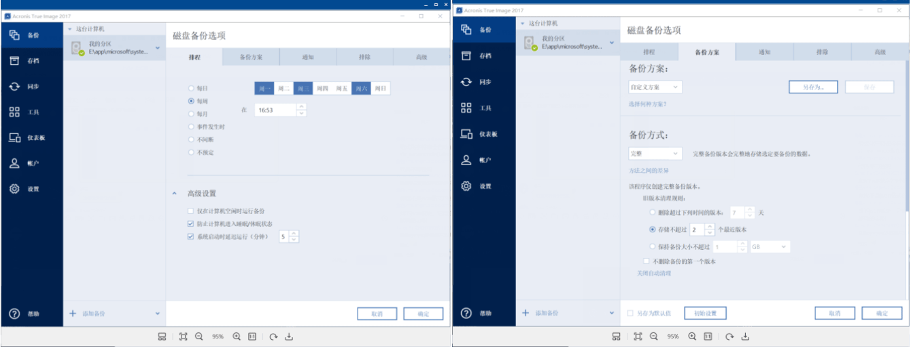
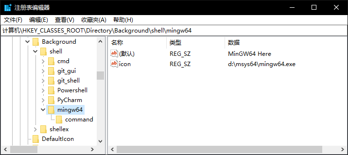
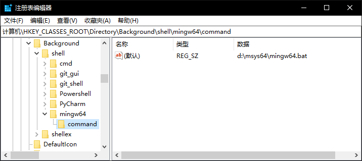
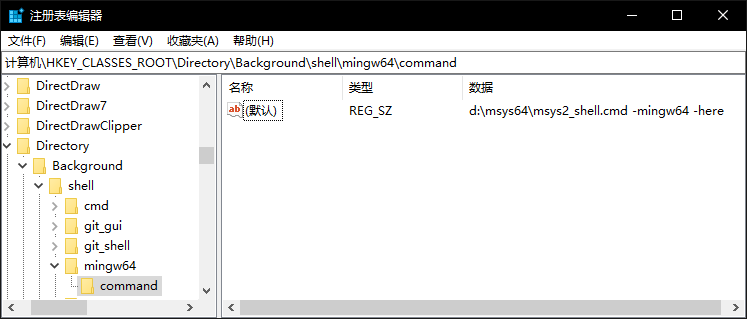
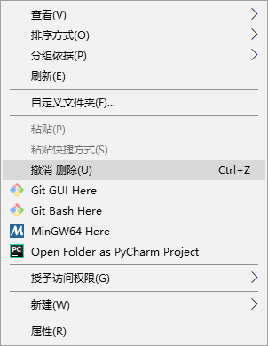
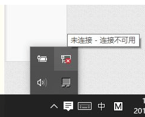
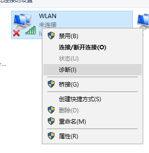
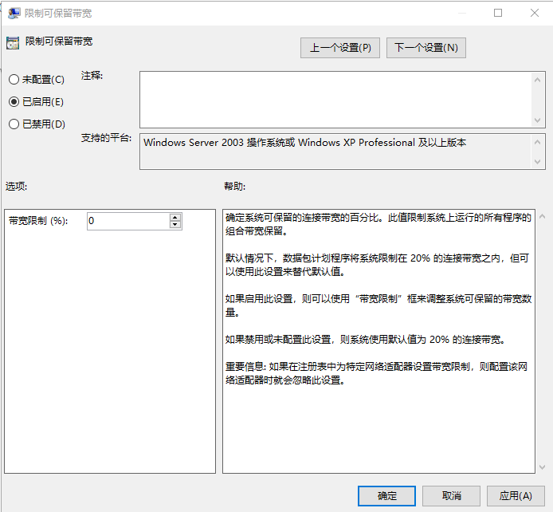

<!DOCTYPE html>
<html lang="en">
<head>
<meta charset="utf-8" />
<meta name="viewport" content="width=device-width, initial-scale=1" />
<title>Tools: 工具分享</title>
<meta name="description" content="Tools: 工具分享" />
<meta name="keywords" content="计算机, 职场, 网站, 英语, 五笔, 知识管理" />
<meta name="generator" content="Org Mode" />
<link rel="icon" href="/favicon.ico" type="image/x-icon">
<link rel="me" href="https://emacs.ch/@jasperhsu">
<meta name="google-adsense-account" content="ca-pub-1741779893655624">
<script async src="https://pagead2.googlesyndication.com/pagead/js/adsbygoogle.js?client=ca-pub-1741779893655624" crossorigin="anonymous"></script>
<!-- from -->
<!--
<style>#back-to-top{background:#000;-webkit-border-radius:50%;-moz-border-radius:50%;border-radius:50%;bottom:20px;-webkit-box-shadow:0 2px 5px 0 rgba(0,0,0,.26);-moz-box-shadow:0 2px 5px 0 rgba(0,0,0,.26);box-shadow:0 2px 5px 0 rgba(0,0,0,.26);color:#fff;cursor:pointer;display:block;height:56px;opacity:1;outline:0;position:fixed;right:20px;-webkit-tap-highlight-color:transparent;-webkit-touch-callout:none;-webkit-transition:bottom .2s,opacity .2s;-o-transition:bottom .2s,opacity .2s;-moz-transition:bottom .2s,opacity .2s;transition:bottom .2s,opacity .2s;-webkit-user-select:none;-moz-user-select:none;-ms-user-select:none;user-select:none;width:56px;z-index:1}#back-to-top svg{display:block;fill:currentColor;height:24px;margin:16px auto 0;width:24px}#back-to-top.hidden{bottom:-56px;opacity:0}</style>
-->
<link rel="stylesheet" href="/static/distro-htmlize.css">
<link rel="stylesheet" href="/static/aandds.com/css/main.css">
<link rel="stylesheet" href="/static/aandds.com/css/drollery.min.css">
<script type="text/javascript" src="/static/aandds.com/js/main.js"></script>
<script>
  window.MathJax = {
    tex: {
      ams: {
        multlineWidth: '85%'
      },
      tags: 'ams',
      tagSide: 'right',
      tagIndent: '.8em'
    },
    chtml: {
      scale: 1.0,
      displayAlign: 'center',
      displayIndent: '0em'
    },
    svg: {
      scale: 1.0,
      displayAlign: 'center',
      displayIndent: '0em'
    },
    output: {
      font: 'mathjax-modern',
      displayOverflow: 'overflow'
    }
  };
</script>

<script
  id="MathJax-script"
  async
  src="https://cdn.jsdelivr.net/npm/mathjax@3/es5/tex-mml-chtml.js">
</script>
</head>
<body>
<div id="content" class="content">
<header>
<h1 class="title">Tools: 工具分享</h1>
</header><nav id="table-of-contents" role="doc-toc">
<h2>Table of Contents</h2>
<div id="text-table-of-contents" role="doc-toc">
<ul>
<li><a href="#h:61841338-60e8-4254-9cd8-39f360391f56">常用软件</a>
<ul>
<li><a href="#h:5AF3BE63-03BC-487F-8DC4-7CB9835DDD22">Windows</a></li>
<li><a href="#h:6ED1BAF0-D740-470F-9857-395B01962C2C">MacOS</a></li>
</ul>
</li>
<li><a href="#h:f25379a8-317f-4719-abbb-397557282c98">浏览器扩展</a></li>
<li><a href="#h:f5405c14-dcae-4f31-a1ad-8415bf878576">桌面设备</a></li>
<li><a href="#h:03ac986a-7911-4d93-ab11-3a44189b20e3">软件使用详解</a>
<ul>
<li><a href="#h:9D6718B7-889F-4B25-9FDD-5B4BA44668F9">sublime text</a></li>
<li><a href="#h:f1925bee-2edb-4eef-a831-5e34f1a51852">PDF文档编辑</a></li>
<li><a href="#h:b9229f4c-f60f-4aa2-9b30-5ac2106abe9f">视频转文案</a></li>
<li><a href="#h:768FA32C-714E-4A3D-B2FB-39EDDF030387">PotPlayer 播放器</a></li>
<li><a href="#h:1b6539bd-8978-4e73-8d38-d8a3d9209fef">MPV视频播放器</a>
<ul>
<li><a href="#h:7C23FBBF-88D6-4136-A033-469E78291880">mpv 使用</a></li>
<li><a href="#h:B56DC406-AFD4-4B4A-AE57-D221C34F3700">配置文件</a></li>
</ul>
</li>
<li><a href="#h:a5340789-8343-470f-ac9b-d1fc1a6ff78f">emacs 窗口透明</a></li>
<li><a href="#h:a091ab0c-2399-460a-a0a6-e30f5845e144">VSCODE插件</a></li>
<li><a href="#h:23f38cbf-5208-4f0a-acb2-faa0d292ce3f">OBS</a>
<ul>
<li><a href="#h:1a0e4347-b0e8-400c-a586-6951e03168ac">画面</a></li>
<li><a href="#h:ce5381ac-1a3f-492c-9c9f-26d520ccfb00">Mac 本地声音问题</a></li>
<li><a href="#h:4ca2fd2d-41ed-4a18-9cc0-48de04890001">不同场景防卡</a></li>
<li><a href="#h:d01f587a-73be-4ec7-b43c-8fffb99a3d85">视频压缩</a></li>
<li><a href="#h:0b34d36d-43b6-4d1b-87ef-c101d9150cec">OBS实现横屏、竖屏同时直播、录制</a></li>
</ul>
</li>
<li><a href="#h:64C32C06-F047-45AA-9586-D1EE14D167FD">Windows</a>
<ul>
<li><a href="#h:38BC57AD-4120-4BCD-B748-E447FCBFB3B8">常用操作</a></li>
<li><a href="#h:25fcc975-b705-4079-b334-c897fcdb3899">系统清理</a></li>
<li><a href="#h:97FCBAAD-73A2-4DBF-8C3A-131542A320C3">系统备份</a></li>
<li><a href="#h:2b540e60-ca89-423d-8139-29ec74023c68">安装WSL</a></li>
<li><a href="#h:09C332F7-72C1-4E7C-8677-58AF9BCAD792">win10安装MSYS2</a></li>
<li><a href="#h:1DA81570-1A24-48DE-9C0D-3A959C527AB9">常见问题</a>
<ul>
<li><a href="#h:28BCAD63-0E4B-4CE8-A807-7E18356E4DDA">WLAN图标不见了，上不了wifi</a></li>
<li><a href="#h:3B39E62C-8AC8-4177-9525-1A5DFA982793">解除网速限制</a></li>
</ul>
</li>
</ul>
</li>
<li><a href="#h:2ED48E65-83BC-4DCD-B35E-0D11A8550007">MacOS</a>
<ul>
<li><a href="#h:F7289164-D937-48B4-88EF-5842296BFDE4">常用操作</a></li>
<li><a href="#h:94D322ED-F74C-4C72-8CDD-F733FD325462">屏幕录制</a></li>
<li><a href="#h:9c5d2dbc-8909-405b-8289-b995eaf7fdcf">访达</a></li>
<li><a href="#h:10C44ED5-ACC8-4AFC-8074-4938AE713EFF">iterm2</a></li>
<li><a href="#h:02FC4720-7ABA-4A08-B288-E6A867420969">如何手动删除chrome浏览器中已储存输入框的文字记录</a></li>
<li><a href="#h:9BEBC685-FF78-44A6-9CCF-883D71C1570C">Brew安装</a></li>
</ul>
</li>
</ul>
</li>
<li><a href="#h:3dce5b3a-2cca-4f21-a236-e07a22705552">浏览器使用详解</a>
<ul>
<li><a href="#h:4b5dfb59-2d16-4854-8e76-f17868533d70">页面截图</a>
<ul>
<li><a href="#h:f95d32fb-c431-47ec-b880-f29444176e71">weasyprint 超大网页保存为 PDF</a></li>
</ul>
</li>
<li><a href="#h:eff1f9c0-2f34-4f00-905f-55ed0a7d7c40">Surfingkeys 像 vim 一样操作浏览器</a></li>
<li><a href="#h:7ee34ed8-c566-4440-891d-ca0cf8c8de1a">Tampermonkey 油猴脚本插件</a></li>
</ul>
</li>
</ul>
</div>
</nav>
<section id="outline-container-h:61841338-60e8-4254-9cd8-39f360391f56" class="outline-2">
<h2 id="h:61841338-60e8-4254-9cd8-39f360391f56"><a href="#h:61841338-60e8-4254-9cd8-39f360391f56">常用软件</a></h2>
<div class="outline-text-2" id="text-h:61841338-60e8-4254-9cd8-39f360391f56">
<ul class="org-ul">
<li>浏览器
<ul class="org-ul">
<li><a href="https://www.google.cn/intl/zh-cn/chrome/">chrome</a></li>
</ul></li>

<li>思维导图
<ul class="org-ul">
<li>mindmanager</li>
<li>mac: mindnode</li>
</ul></li>

<li>图片视频
<ul class="org-ul">
<li><a href="https://www.draw.io">edra</a>w 绘图</li>
<li>visol 绘图</li>
<li><a href="https://picpick.app">picpick</a> 截图</li>
<li><a href="https://www.snipaste.com">snipaste</a> 截图</li>
<li><a href="https://www.pointofix.de">Pointofix</a> 屏幕画笔</li>
<li><a href="https://mpv.io/">MPV</a> 轻量播放器</li>
<li><a href="https://potplayer.daum.net/?lang=zh_CN">PotPlayer</a> 播放器</li>
<li><a href="https://github.com/Hiram-Wong/ZyPlayer">zyplayer</a> 跨平台桌面端视频资源播放器</li>
</ul></li>
<li>模拟器
<ul class="org-ul">
<li><a href="https://www.ldmnq.com/">雷电模拟器</a></li>
<li><a href="https://mumu.163.com/">MuMu模拟器</a></li>
</ul></li>

<li>录屏相关：
<ul class="org-ul">
<li><a href="https://obsproject.com/">OBS</a></li>
<li>camtasia studio 录屏(1280*720像素)</li>
<li>oCam</li>
<li><a href="https://www.ieway.cn/">EV 录屏</a></li>
</ul></li>
<li>office工具
<ul class="org-ul">
<li>WPS</li>
</ul></li>
<li>markdown
<ul class="org-ul">
<li><a href="https://github.com/marktext/marktext">marktext</a></li>
<li>Typora 收费</li>
<li>MWeb 在mac下的 markdown</li>
<li>Ulysses 编写工具</li>
</ul></li>
<li>桌面分享
<ul class="org-ul">
<li>vnc server</li>
</ul></li>

<li>出版
<ul class="org-ul">
<li>Sphinx 文档工具 <a href="https://www.sphinx-doc.org/">https://www.sphinx-doc.org/</a></li>
<li>Graphviz <a href="https://www.graphviz.org/">https://www.graphviz.org/</a></li>
<li>leanpub（电子书籍出版平台） <a href="https://leanpub.com/">https://leanpub.com/</a></li>
</ul></li>
</ul>

<p>
<b>开发</b>
</p>

<ul class="org-ul">
<li>翻墙工具
<ul class="org-ul">
<li>lantern
<ul class="org-ul">
<li><a href="https://x.ishadowx.net/">https://x.ishadowx.net/</a></li>
<li><a href="https://abc.ss8.fun">https://abc.ss8.fun</a></li>
</ul></li>
</ul></li>

<li>ssh远程连接工具
<ul class="org-ul">
<li>CRT</li>
<li><a href="https://github.com/kingToolbox/WindTerm">windterm</a></li>
</ul></li>

<li>虚拟机创建
<ul class="org-ul">
<li>vmware</li>
<li>vitrualbox</li>
<li></li>
</ul></li>

<li>文本编辑器
<ul class="org-ul">
<li><a href="https://www.gnu.org/software/emacs/">Emacs</a></li>
<li>vim  neovim（vim改进）</li>
<li>sublime text</li>
<li>EmEditor文本编辑工具</li>
</ul></li>

<li>文件对比：
<ul class="org-ul">
<li><a href="https://www.scootersoftware.com/download/download">Beyond Compare</a></li>
<li><a href="https://winmerge.org/downloads/">WinMerge</a></li>
</ul></li>

<li>文本处理</li>

<li>远程开发：
<ul class="org-ul">
<li>Visual Studio Code Insiders</li>
</ul></li>

<li>切换hosts
<ul class="org-ul">
<li><a href="https://github.com/oldj/SwitchHosts/releases">SwitchHosts</a></li>
</ul></li>

<li>抓包软件
<ul class="org-ul">
<li><a href="https://www.tcpdump.org/">Tcpdump</a>(tcp/ip)</li>
<li><a href="https://www.wireshark.org/">Wireshark</a>(tcp/ip)</li>
<li><a href="https://portswigger.net/burp/releases">Burp Suite</a>(http)</li>
<li><a href="https://www.charlesproxy.com/">Charles</a>(http)</li>
<li><a href="https://www.telerik.com/fiddler">Fiddler</a>(http)</li>
</ul></li>

<li>调试软件
<ul class="org-ul">
<li><a href="https://www.postman.com/">Postman</a></li>
</ul></li>
</ul>
</div>
<div id="outline-container-h:5AF3BE63-03BC-487F-8DC4-7CB9835DDD22" class="outline-3">
<h3 id="h:5AF3BE63-03BC-487F-8DC4-7CB9835DDD22"><a href="#h:5AF3BE63-03BC-487F-8DC4-7CB9835DDD22">Windows</a></h3>
<div class="outline-text-3" id="text-h:5AF3BE63-03BC-487F-8DC4-7CB9835DDD22">
<ul class="org-ul">
<li>磁盘备份
<ul class="org-ul">
<li><a href="https://github.com/Chuyu-Team/Dism-Multi-language">Dism++</a></li>
</ul></li>
<li>分析
<ul class="org-ul">
<li><a href="https://diskanalyzer.com/download">WizTree</a> 硬盘空间分析</li>
</ul></li>
<li>ssh远程连接工具
<ul class="org-ul">
<li><a href="https://www.xshell.com/zh/free-for-home-school/">XShell</a></li>
<li><a href="https://www.putty.org/">PuTTY</a></li>
</ul></li>

<li>文本处理
<ul class="org-ul">
<li><a href="https://www.voidtools.com/zh-cn/">Everything</a> 本地搜索引擎</li>
<li>beycmpsc win32文本比较工具</li>
</ul></li>
</ul>
</div>
</div>
<div id="outline-container-h:6ED1BAF0-D740-470F-9857-395B01962C2C" class="outline-3">
<h3 id="h:6ED1BAF0-D740-470F-9857-395B01962C2C"><a href="#h:6ED1BAF0-D740-470F-9857-395B01962C2C">MacOS</a></h3>
<div class="outline-text-3" id="text-h:6ED1BAF0-D740-470F-9857-395B01962C2C">
<ul class="org-ul">
<li>窗口管理器
<ul class="org-ul">
<li><a href="https://github.com/koekeishiya/yabai">yabai</a></li>
</ul></li>

<li>按键回显
<ul class="org-ul">
<li><a href="https://github.com/keycastr/keycastr">KeyCastr</a></li>
</ul></li>
<li>压缩工具
<ul class="org-ul">
<li><a href="https://ezip.awehunt.com/">maczip</a></li>
</ul></li>

<li>虚拟机
<ul class="org-ul">
<li>VMWare fusion</li>
<li>UTM</li>
</ul></li>

<li>终端
<ul class="org-ul">
<li>iterm2</li>
<li>oh-myzsh ：frisk</li>
</ul></li>
<li>ssh forward:
<ul class="org-ul">
<li>SSH Tunnel 16.07</li>
</ul></li>
</ul>


<ul class="org-ul">
<li>空间分析
<ul class="org-ul">
<li><a href="https://lemon.qq.com/">lemon</a>: 清理文件，只能扫描 Mac 上的内置硬盘文件。</li>
<li><a href="https://www.omnigroup.com/more">OmniDiskSweeper</a>: 可以扫描 Mac 上所有外接硬盘</li>
</ul></li>

<li>查看 PDF
<ul class="org-ul">
<li>PDFgear: 免费</li>
</ul></li>

<li>超级右键</li>

<li>anriond模拟器
<ul class="org-ul">
<li><a href="https://sj.qq.com/download">应用宝</a>：免费。只能开一个应用</li>
<li><a href="https://www.bluestacks.com/mac">BlueStacks Air</a>：免费。多开</li>
<li>mumu模拟器：收费。多开</li>
</ul></li>
</ul>


<p>
<b>桌面</b>
</p>
<ul class="org-ul">
<li>看电子书：calibre</li>
<li>搜索语言文档：dash</li>
<li>搜索文件：alfred 4</li>
</ul>


<p>
<b>终端</b>
</p>

<ul class="org-ul">
<li>包管理器：homebrew</li>
<li>代码统计：cloc</li>
<li>端口转发：rinetd <code>brew install rinetd</code></li>
</ul>

<p>
nat网络与宿主机通信<a href="https://www.codenong.com/js2e4d2838fd55/">https://www.codenong.com/js2e4d2838fd55/</a>
</p>
</div>
</div>
</section>
<section id="outline-container-h:f25379a8-317f-4719-abbb-397557282c98" class="outline-2">
<h2 id="h:f25379a8-317f-4719-abbb-397557282c98"><a href="#h:f25379a8-317f-4719-abbb-397557282c98">浏览器扩展</a></h2>
<div class="outline-text-2" id="text-h:f25379a8-317f-4719-abbb-397557282c98">
<p>
常用：
</p>
<ul class="org-ul">
<li>AdBlock: 广告过滤插件</li>
<li><a href="https://www.doubao.com/browser-extension/landing">豆包</a>：网页上划词，唤起豆包。当你观看视频时，豆包能帮你总结视频。双语字幕。</li>
<li><a href="https://chromewebstore.google.com/detail/vimium/dbepggeogbaibhgnhhndojpepiihcmeb">vimium</a>: 快捷键操作网页</li>
<li>Tampermonkey: 油猴脚本插件，强大 ⭐</li>
<li>扩展管理器（Extension Manager）</li>
<li>YouTube
<ul class="org-ul">
<li>订阅分类： <a href="https://chromewebstore.google.com/detail/pockettube-youtube-subscr/kdmnjgijlmjgmimahnillepgcgeemffb">Youtube Subscription Manager</a></li>
<li>Rotate that Video Player 视频翻转</li>
</ul></li>
</ul>


<p>
其它：
</p>
<ul class="org-ul">
<li><a href="https://immersive-translate.owenyoung.com/">沉浸式翻译</a>:</li>
<li>代理:轻松快捷地管理和切换多个代理设置 ⭐
<ul class="org-ul">
<li>FoxyProxy</li>
<li>Oasis Proxy(谷歌)</li>
<li><a href="https://chromewebstore.google.com/detail/proxy-switchyomega-3-zero/ffohofpphcipibljoleomppmomngghmo">Proxy SwitchyOmega</a>
<ul class="org-ul">
<li>gfwlist的列表url地址为：<a href="https://raw.githubusercontent.com/gfwlist/gfwlist/master/gfwlist.txt">https://raw.githubusercontent.com/gfwlist/gfwlist/master/gfwlist.txt</a></li>
</ul></li>
</ul></li>
<li>嗅探下载，多纯种下载 ⭐
<ul class="org-ul">
<li>idm</li>
<li><a href="https://www.neatdownloadmanager.com/">NeatDownloadManager</a> 取代 idm</li>
</ul></li>
<li><a href="https://chromewebstore.google.com/detail/reproductor-m3u8-hls-+-da/lcipembjfkmeggpihdpdgnjildgniffl">Reproductor M3U8 - HLS + DASH Player</a> m3u8播放插件</li>
<li>bitwarden密码管理器</li>
<li>捕捉网页截图</li>
<li>网页转markdown</li>
<li>Picture in Picture for every website : 视频弹出
或双击右键，注意是右键，选择画中画。就不需要安装扩展了</li>
<li>CLEAN crxMouse Gestures  [鼠标手势]</li>
<li>Dualsub 视频双语</li>
<li>二维码生成器 (Quick QR)</li>
<li>History Manager [浏览历史管理]</li>
<li>BlockTube [不感兴趣的)</li>
<li>AHA Music - Music Identifier [没用过 音乐识别</li>
<li>类似的网站 - 发现相关网站</li>
<li>高效网页截图编辑插件</li>
<li>Linkclump [一次打开条链接]</li>
<li>Video Speed Controller  [播放速度]</li>
<li>WhatFont [字体]</li>
<li>Selection Context Search [右键增强探索]</li>
<li>Speed Dial [FVD] [New Tab Page, 3D, Sync.. 导航]</li>
<li>AC-baidu-重定向 作用去广告及推广</li>
</ul>

<p>
开发:
</p>
<ul class="org-ul">
<li>vim
<ul class="org-ul">
<li><a href="https://chromewebstore.google.com/detail/vimium/dbepggeogbaibhgnhhndojpepiihcmeb">vimium</a></li>
<li>Surfingkeys: 像 vim 一样操作浏览器</li>
</ul></li>
<li>Octotree : github代码树</li>
<li>ElasticSearch Head</li>
<li>FeHelper: JSON 自动格式化</li>
<li>身份验证器: 双重认证</li>

<li>安全
<ul class="org-ul">
<li>hackbar: 加载url并修改</li>
<li>Cookie-Editor: 修改cookie</li>
</ul></li>
</ul>
</div>
</section>
<section id="outline-container-h:f5405c14-dcae-4f31-a1ad-8415bf878576" class="outline-2">
<h2 id="h:f5405c14-dcae-4f31-a1ad-8415bf878576"><a href="#h:f5405c14-dcae-4f31-a1ad-8415bf878576">桌面设备</a></h2>
<div class="outline-text-2" id="text-h:f5405c14-dcae-4f31-a1ad-8415bf878576">
<ul class="org-ul">
<li>电动升降桌</li>
<li>🏷️屏幕挂灯：BenQ Screen Bar （明基屏幕挂灯）</li>
<li>🏷️显示器：LG35WN73A-B（乐金35寸显示器）</li>
<li>🏷️音响：Edifier R1280DB Speaker（漫步者 R1280DB）</li>
<li>🏷️配件：OrbitKey Nest（OrbitKey收纳盒）</li>
<li>🏷️装饰：Grid Studio Apple iPhone（苹果手机元件画）</li>
<li>🏷️显示器支架：Balolo Setup Cockpit （Balolo胡桃木支架）、爱格升支架</li>
<li>🏷️鼠标：Logitech MX Master3（罗技MX Master3鼠标）</li>
<li>🏷️键盘：Logitech MX Keys（罗技MX 键盘）Keychron K2（京造K2）</li>
<li>🏷️鼠标垫：Harber London Desk Mat（Harber London鼠标垫）</li>
<li>🏷️桌子：Flexispot EC5（Flexispot EC5升降桌）</li>
<li>🏷️椅子：Flexispot BD10 Chair （Flexispot BD电竞椅）</li>
</ul>
</div>
</section>
<section id="outline-container-h:03ac986a-7911-4d93-ab11-3a44189b20e3" class="outline-2">
<h2 id="h:03ac986a-7911-4d93-ab11-3a44189b20e3"><a href="#h:03ac986a-7911-4d93-ab11-3a44189b20e3">软件使用详解</a></h2>
<div class="outline-text-2" id="text-h:03ac986a-7911-4d93-ab11-3a44189b20e3">
</div>
<div id="outline-container-h:9D6718B7-889F-4B25-9FDD-5B4BA44668F9" class="outline-3">
<h3 id="h:9D6718B7-889F-4B25-9FDD-5B4BA44668F9"><a href="#h:9D6718B7-889F-4B25-9FDD-5B4BA44668F9">sublime text</a></h3>
<div class="outline-text-3" id="text-h:9D6718B7-889F-4B25-9FDD-5B4BA44668F9">
<p>
自动转换TAB成空格。菜单栏Sublime Text &#x2013;&gt;Settings &#x2013;&gt; Settings
</p>

<pre class="example" id="org513b334">
{

    "default_encoding": "UTF-8",//编码
    "expand_tabs_on_save": true, //若要在保存时自动把tab 转换成空格，请把值设置成 true，如不需要: 设置成 false
    "font_size": 15,//设置字体大小
    "tab_size": 4,//把 tab 转换成4个空格
    "show_encoding": true,
    "show_full_path": true,
    "word_wrap": false,
    "trim_trailing_white_space_on_save": true,//此行的主要作用是, 当某行为空格且无其它字符时, 保存时会去除空白
    "translate_tabs_to_spaces": true//把tab 转换成 空格
}
</pre>
</div>
</div>
<div id="outline-container-h:f1925bee-2edb-4eef-a831-5e34f1a51852" class="outline-3">
<h3 id="h:f1925bee-2edb-4eef-a831-5e34f1a51852"><a href="#h:f1925bee-2edb-4eef-a831-5e34f1a51852">PDF文档编辑</a></h3>
<div class="outline-text-3" id="text-h:f1925bee-2edb-4eef-a831-5e34f1a51852">
<ul class="org-ul">
<li><p>
Adobe Acrobat Professional
</p>

<p>
pdf阅读器，后面文档很多都是加密的，每次
打开需要输入密码，可以用“悦书pdf阅读器”进行解密。ctrl + alt +d
去水印
</p></li>

<li><p>
PDF转markdown
</p>

<p>
通过PDF XChange Editor将PDF转Word格式，再用pandoc或者Typora转换为Markdown格式
</p></li>
</ul>
</div>
</div>
<div id="outline-container-h:b9229f4c-f60f-4aa2-9b30-5ac2106abe9f" class="outline-3">
<h3 id="h:b9229f4c-f60f-4aa2-9b30-5ac2106abe9f"><a href="#h:b9229f4c-f60f-4aa2-9b30-5ac2106abe9f">视频转文案</a></h3>
<div class="outline-text-3" id="text-h:b9229f4c-f60f-4aa2-9b30-5ac2106abe9f">
<p>
浏览器登录飞书，找到妙记，上传视频，查看文字记录。
</p>
</div>
</div>
<div id="outline-container-h:768FA32C-714E-4A3D-B2FB-39EDDF030387" class="outline-3">
<h3 id="h:768FA32C-714E-4A3D-B2FB-39EDDF030387"><a href="#h:768FA32C-714E-4A3D-B2FB-39EDDF030387">PotPlayer 播放器</a></h3>
<div class="outline-text-3" id="text-h:768FA32C-714E-4A3D-B2FB-39EDDF030387">
<p>
直播源： <a href="https://github.com/Ftindy/IPTV-URL">https://github.com/Ftindy/IPTV-URL</a>
</p>
</div>
</div>
<div id="outline-container-h:1b6539bd-8978-4e73-8d38-d8a3d9209fef" class="outline-3">
<h3 id="h:1b6539bd-8978-4e73-8d38-d8a3d9209fef"><a href="#h:1b6539bd-8978-4e73-8d38-d8a3d9209fef">MPV视频播放器</a></h3>
<div class="outline-text-3" id="text-h:1b6539bd-8978-4e73-8d38-d8a3d9209fef">
<p>
MPV 是一个基于 MPlayer 和 mplayer2 的开源极简全能播放器。支持各种视频格式、音频解码、支持特效字幕（电影动漫的ass特效字
幕都没啥问题），不仅支持本地播放，同样支持网络播放。重点是 MPV 具有多系统平台支持、命令行、自定义、GPU 解码、脚本支持等特点……
</p>

<p>
<b>高手们的挚爱！MPV 极简万能播放器</b>
</p>


<p>
<b>MPV 下载与安装</b>
</p>


<p>
<a href="https://mpv.io/">https://mpv.io/</a>
</p>

<p>
1、Windows
</p>

<p>
下载Windows 64位
</p>

<p>
2、Linux
</p>

<div class="org-src-container">
<pre class="src src-sh"><span class="org-comment-delimiter">#</span><span class="org-comment">ubuntu
</span>sudo add-apt-repository ppa:mc3man/mpv-tests
sudo apt-get update
sudo apt-get install mpv
</pre>
</div>

<p>
3、macOS (Mac OS X)
带图形界面
</p>
<ul class="org-ul">
<li>下载官方编译好的，<a href="https://mpv.io/installation/">https://mpv.io/installation/</a></li>
</ul>

<p>
进入 Homebrew 官网 <a href="https://brew.sh/">https://brew.sh/</a> 安装 brew
</p>
<div class="org-src-container">
<pre class="src src-shell">/bin/bash -c <span class="org-string">"$(curl -fsSL https://raw.githubusercontent.com/Homebrew/install/HEAD/install.sh)"</span>
</pre>
</div>

<p>
安装辅助工具 <a href="https://ffmpeg.org/">ffmpeg</a> <a href="https://github.com/yt-dlp/yt-dlp">yt-dlp</a>
</p>
<div class="org-src-container">
<pre class="src src-shell">brew search ffmpeg
brew install ffmpeg
brew install yt-dlp <span class="org-comment-delimiter"># </span><span class="org-comment">youtube-dl &#19981;&#32500;&#25252;&#20102;&#65292;&#29992;&#27861;&#31867;&#20284;</span>
</pre>
</div>

<div class="org-src-container">
<pre class="src src-sh"><span class="org-comment-delimiter"># </span><span class="org-comment">&#21629;&#20196;&#34892; mpv
</span>brew install mpv
mpv --version
</pre>
</div>

<p>
安装图形界面播放器（二选一，强烈推荐 IINA）
</p>

<p>
方案 A：IINA（首选，macOS 原生界面，mpv 内核，已公证，无 Gatekeeper 报错）
</p>
<div class="org-src-container">
<pre class="src src-shell">brew install --cask iina
</pre>
</div>
<ul class="org-ul">
<li>优势：可以直接双击视频文件打开、触控板手势、画中画、字幕搜索、兼容你的 mpv 脚本；</li>
<li>底层复用 mpv 引擎，设置里可以加载自定义 mpv.conf、lua 脚本；</li>
<li>官网：<a href="https://iina.io">https://iina.io</a></li>
</ul>

<p>
方案 B：如果你坚持想要独立原生 mpv.app（非 IINA）
</p>
<ul class="org-ul">
<li>自行从 mpv.io 下载官方 macOS 构建包</li>
</ul>

<p>
命令行 mpv 和 IINA 如何共享配置
</p>
<ul class="org-ul">
<li>IINA 设置 → 高级 → 启用「使用外部 mpv 配置文件」，指向 <code>~/.config/mpv/mpv.conf</code> ，脚本目录共用。</li>
</ul>


<p>
本地观看 youtube 视频
</p>

<div class="org-src-container">
<pre class="src src-sh">mpv https://youtube.com/xxx
</pre>
</div>
</div>
<div id="outline-container-h:7C23FBBF-88D6-4136-A033-469E78291880" class="outline-4">
<h4 id="h:7C23FBBF-88D6-4136-A033-469E78291880"><a href="#h:7C23FBBF-88D6-4136-A033-469E78291880">mpv 使用</a></h4>
<div class="outline-text-4" id="text-h:7C23FBBF-88D6-4136-A033-469E78291880">
<p>
1、OSC 界面操作说明
</p>


<figure id="org181a315">


</figure>


<p>
2、快捷键
</p>

<p>
操作主要通过键盘快捷键（区分大小写）调整。下面介绍一些常用的 mpv 快捷
键（更多的快捷键请阅读官方参考手册）。
</p>

<div class="org-src-container">
<pre class="src src-shell">&#40736;&#26631;&#25805;&#20316;
-------------------------------------
&#40736;&#26631;&#24038;&#38190;&#21452;&#20987;    &#36827;&#20837;/&#36864;&#20986;&#20840;&#23631;
&#40736;&#26631;&#21491;&#38190;&#21333;&#20987;    &#26242;&#20572;/&#32487;&#32493;&#25773;&#25918;

&#25773;&#25918;&#25511;&#21046;
-------------------------------------
&#24555;&#25463;&#38190;         &#20316;&#29992;&#35828;&#26126;
[] : &#25773;&#25918;&#36895;&#24230;
, : &#36880;&#24103;&#25773;&#25918;
. : &#25353;&#19979;&#25773;&#25918;&#65292;&#22238;&#24377;&#26242;&#20572;
p &#21644; Space : &#26242;&#20572;&#12289;&#32487;&#32493;&#25773;&#25918;
/ &#21644; *  : &#20943;&#23569;/&#22686;&#21152;&#38899;&#37327;
9 &#21644; 0 : &#20943;&#23569;/&#22686;&#21152;&#38899;&#37327;&#65288;&#25968;&#23383;&#38190;&#30424;&#21306;&#30340;9&#12289;0&#19981;&#21487;&#29992;&#65289;
m         &#38745;&#38899;
{    }    &#22823;&#24133;&#24230;&#24555;&#36827;&#21518;&#36864;  &#25110;&#23567;&#21103;&#24230; [ ]
&#8592; &#21644; &#8594; : &#24555;&#36864;/&#24555;&#36827;5&#31186;
&#8593; &#21644; &#8595; : &#24555;&#36827;/&#24555;&#36864;1&#20998;&#38047;
&lt;    &gt;    &#19978;&#19968;&#20010;/&#19979;&#19968;&#20010;&#65288;&#25773;&#25918;&#21015;&#34920;&#20013;&#65289;
Enter         &#19979;&#19968;&#20010;&#65288;&#25773;&#25918;&#21015;&#34920;&#20013;&#65289;
l         &#35774;&#23450;/&#28165;&#38500; A-B&#24490;&#29615;&#28857;
L         &#24490;&#29615;&#25773;&#25918;
&#23567;L     &#35774;&#32622;&#24490;&#29615;&#25773;&#25918;&#28857;
s &#21644; ctrl +s : &#25130;&#23631;
Ctrl + s &#36830;&#32493;&#25130;&#23631; &#20445;&#23384;&#22312;&#26700;&#38754;
q &#25110; command q : &#20572;&#27490;&#25773;&#25918;&#24182;&#36864;&#20986;
Q         &#20445;&#23384;&#24403;&#21069;&#25773;&#25918;&#36827;&#24230;&#24182;&#36864;&#20986;&#65292;&#25773;&#25918;&#21516;&#26679;&#25991;&#20214;&#20174;&#19978;&#27425;&#20445;&#23384;&#36827;&#24230;&#32487;&#32493;&#25773;&#25918;&#12290;

O : &#20999;&#25442;OSD&#27169;&#24335;&#65292;&#20250;&#26174;&#31034;&#36827;&#24230;
w &#21644; e : &#38477;&#20302;/ &#25552;&#39640;&#25671;&#31227;&#33539;&#22260;&#12290;#&#25918;&#22823;&#32553;&#23567;&#20840;&#23631;&#22270;&#20687;
d --------------&#24490;&#29615;&#20002;&#24103;&#29366;&#24577;: &#26080; / &#36339;&#36807;&#26174;&#31034; / &#36339;&#36807;&#35299;&#30721;
7/8 &#35843;&#25972;&#39281;&#21644;&#24230;


&#35270;&#39057;&#25511;&#21046;
-------------------------------------
<span class="org-function-name">_</span>(&#19979;&#21010;&#32447;)         &#24490;&#29615;&#20999;&#25442;&#21487;&#29992;&#35270;&#39057;&#36712;
A         &#24490;&#29615;&#20999;&#25442;&#35270;&#39057;&#30011;&#38754;&#27604;&#20363;
Alt+0    Command+0 on OS X    0.5&#20493;&#28304;&#35270;&#39057;&#30011;&#38754;&#22823;&#23567;
Alt+1    Command+1 on OS X    1&#20493;&#28304;&#35270;&#39057;&#30011;&#38754;&#22823;&#23567;&#12290;&#24674;&#22797;&#21407;&#22987;&#35270;&#39057;&#22823;&#23567;
Alt+2    Command+2 on OS X    2&#20493;&#28304;&#35270;&#39057;&#30011;&#38754;&#22823;&#23567;
Alt + &#23567;&#38190;&#30424;+    &#25918;&#22823;&#30011;&#38754;&#20869;&#23481; video&#8209;zoom
Alt + &#23567;&#38190;&#30424;&#8209;    &#32553;&#23567;&#30011;&#38754;&#20869;&#23481; video&#8209;zoom
Alt + &#8592; &#8594; &#8593; &#8595;   &#25918;&#22823;&#21518;&#24179;&#31227;&#30011;&#38754;&#65288;pan&#8209;x/pan&#8209;y&#65289;
&#37325;&#32622;&#65306;&#25353;&#19979; Alt + Backspace&#65288;&#36864;&#26684;&#38190;&#65289;

delete&#38190; &#26159;&#21542;&#26174;&#31034;&#36827;&#24230;&#26465;

&#38899;&#39057;&#25511;&#21046;
-------------------------------------
<span class="org-comment-delimiter">#         </span><span class="org-comment">&#24490;&#29615;&#20999;&#25442;&#21487;&#29992;&#38899;&#39057;&#36712;
</span>Ctrl +    Ctrl -    &#38899;&#36712;&#24310;&#36831;+/- 0.1&#31186;

&#23383;&#24149;&#25511;&#21046;
-------------------------------------
V         &#20851;&#38381;/&#24320;&#21551;&#23383;&#24149;
j    J    &#24490;&#29615;&#20999;&#25442;&#21487;&#29992;&#23383;&#24149;&#36712;
x    z    &#23383;&#24149;&#24310;&#36831; +/- 0.1&#31186;
<span class="org-builtin">r</span> &#21644; t : &#19978;&#31227;/&#19979;&#31227;&#23383;&#24149;&#20301;&#32622;
u : &#23383;&#24149;&#26679;&#24335;override

&#31383;&#21475;&#25511;&#21046;
-------------------------------------
T : &#31383;&#21475;&#22987;&#32456;&#32622;&#39030;
f  : &#36827;&#20837;/&#36864;&#20986;&#20840;&#23631;
ESC : &#36864;&#20986;&#20840;&#23631;
Command+f OS X Only    &#20999;&#25442;&#20840;&#23631;


------------------
&#24120;&#29992;

[]&#25773;&#25918;&#36895;&#24230;
&lt;&#36880;&#24103;&#25773;&#25918;
&gt;&#25353;&#19979;&#25773;&#25918;&#65292;&#22238;&#24377;&#26242;&#20572;
-------------------
<span class="org-builtin">shift</span>+T&#26368;&#21069;&#31471;&#26174;&#31034;
PageUP&#19979;&#19968;&#31456;&#33410;
PageDown&#19978;&#19968;&#31456;&#33410;
Right&#21069;&#36827;5&#31186;
Left&#21518;&#36864;5&#31186;
Up&#21069;&#36827;10&#31186;
Down&#21518;&#36864;10&#31186;
RightClick/Space/P&#26242;&#20572;&#25773;&#25918;
f/LeftDoubleClick&#20840;&#23631;
ESC&#36864;&#20986;&#20840;&#23631;
q/command+q&#36864;&#20986;&#25773;&#25918;&#22120;
O&#26174;&#31034;&#36827;&#24230;
[]&#25773;&#25918;&#36895;&#24230;
w/e&#22909;&#20687;&#26159;&#21098;&#35009;
r/t&#23383;&#24149;&#20301;&#32622;
u&#23383;&#24149;&#26679;&#24335;override
s/ctrl+s&#25130;&#22270;
d&#21453;&#20132;&#38169;&#24320;&#20851;Deinterlace
<span class="org-function-name">h/k&#30005;&#35270;&#39057;&#36947;</span>(&#27809;&#20160;&#20040;&#29992;)
J&#20999;&#25442;&#23383;&#24149;
L&#26576;&#19968;&#27573;&#37325;&#22797;&#25773;&#25918;&#65288;&#39740;&#30044;&#65289;
Z/X&#23383;&#24149;&#24310;&#36831;
v&#38544;&#34255;&#26174;&#31034;&#23383;&#24149;
M&#38745;&#38899;
&lt;&#36880;&#24103;&#25773;&#25918;
&gt;&#25353;&#19979;&#25773;&#25918;&#65292;&#22238;&#24377;&#26242;&#20572;
1&#23545;&#27604;&#24230;-
2&#23545;&#27604;&#24230;+
3&#20142;&#24230;-
4&#20142;&#24230;+
5&#20285;&#39532;-
6&#20285;&#39532;+
7&#39281;&#21644;&#24230;-
8&#39281;&#21644;&#24230;+
9&#12289;/&#20943;&#23567;&#38899;&#37327;
0&#12289;*&#22686;&#22823;&#38899;&#37327;
</pre>
</div>


<p>
3、mpv 播放多个文件 (播放列表)
</p>

<p>
MPV 支持播放列表文件（如：m3u）。如果需要临时播放多个文件，Windows 下
（打开MPV，选中多个文件拖入窗口），Linux 和 OS X下则选中多个文件，右键
选中MPV打开。鼠标右键单击“上一个”或者“下一个”按钮可以临时显示当前
播放列表。
</p>

<p>
如果需要将该目录的文件全部添加进MPV的播放列表中，命令行跳转到该目录。
</p>

<p>
使用命令： <code>mpv *.*</code>
</p>

<p>
4、mpv 播放音乐音频
</p>

<p>
如果音频文件内嵌音乐封面图片，MPV 也可以同时显示的，比如 MP3 格式。
</p>

<p>
5、命令行调用 mpv
</p>

<p>
各平台下的 mpv 均能支持命令行调用来进行播放，具体命令参数见官方参考手
册。（注：参数调用需要加“&#x2013;”，配置文件内使用则不需要加“&#x2013;”）。
</p>

<p>
Mac OS X 平台下通过终端调用输出相关反馈信息需要添加参数：&#x2013;terminal
</p>

<p>
6、幻灯片播放图片文件
</p>

<p>
除了视频和音乐之外，mpv 其实还支持幻灯片的方式来播放图片。拖入多个图片
进入MPV，它就会以一秒显示一张图片的方式进行播放。
</p>

<p>
<b>mpv 配置文件介绍</b>
</p>

<p>
mpv 的默认设置并不适合与所有人，软件提供众多自定义选项，既能用于命令行，
也能用于配置文件。它们可以让 MPV 更加贴合用户自己的使用习惯。这里介绍
的一些常用的选项只是 MPV 官方参考手册中很小一部分。
</p>

<p>
1、mpv 配置文件的存放路径
</p>

<p>
注：请运行一次 MPV 后再去打开配置文件夹，否则可能提示文件夹不存在。
</p>

<ul class="org-ul">
<li>Windows 平台</li>
</ul>

<p>
%APPDATA%/mpv/
</p>

<p>
打开方式：Win+R 运行 %APPDATA%/mpv/
</p>

<p>
Linux 平台
</p>

<p>
~/.config/mpv/
</p>

<p>
打开方式：终端执行命令：nemo ~/.config/mpv/
</p>

<p>
注：nemo 为Linux Mint 自带文件管理器，其它发行版文件管理器或有不同，如：Ubuntu 带的是 nautilus
</p>

<ul class="org-ul">
<li>Mac 平台</li>
</ul>

<p>
~/.config/mpv/
</p>

<p>
打开方式：终端执行命令：open ~/.config/mpv/
</p>
</div>
</div>
<div id="outline-container-h:B56DC406-AFD4-4B4A-AE57-D221C34F3700" class="outline-4">
<h4 id="h:B56DC406-AFD4-4B4A-AE57-D221C34F3700"><a href="#h:B56DC406-AFD4-4B4A-AE57-D221C34F3700">配置文件</a></h4>
<div class="outline-text-4" id="text-h:B56DC406-AFD4-4B4A-AE57-D221C34F3700">
<p>
mpv.conf 是 mpv 的主配置文件，其它相关的配置文件也会放置在上述的路径里
面。注：配置文件中的内容只需根据实际需要选择性使用即可，#号起头的注释
无需填写。这有一个 mpv 配置文件的示例。
<a href="https://github.com/mpv-player/mpv/blob/master/etc/mpv.conf">https://github.com/mpv-player/mpv/blob/master/etc/mpv.conf</a>
</p>

<p>
<b>mpv.conf 主配置文件</b>
</p>

<div class="org-src-container">
<pre class="src src-shell"><span class="org-comment-delimiter">#</span><span class="org-comment">&#31383;&#21475;
</span><span class="org-comment-delimiter">#</span><span class="org-comment">&#31383;&#21475;&#22987;&#32456;&#32622;&#39030;
</span>ontop

<span class="org-comment-delimiter">#</span><span class="org-comment">&#20851;&#38381;&#31383;&#21475;&#35013;&#39280;&#65288;&#26080;&#36793;&#26694;&#65289;
</span>no-border

<span class="org-comment-delimiter">#</span><span class="org-comment">&#35270;&#39057;&#31383;&#21475;&#26368;&#22823;&#21270;&#36866;&#24212;&#65288;&#24403;&#35270;&#39057;&#20998;&#36776;&#29575;&#22823;&#20110;&#23631;&#24149;&#20998;&#36776;&#29575;&#26102;&#65292;&#38480;&#21046;&#31383;&#21475;&#22823;&#23567;&#20026;&#23631;&#24149;&#20998;&#36776;&#29575;&#23545;&#24212;&#27604;&#20363;&#65292;&#36991;&#20813;&#23436;&#20840;&#21344;&#28385;&#23631;&#24149;&#65289;
</span>autofit-larger=85%x85%

<span class="org-comment-delimiter">#</span><span class="org-comment">&#22914;&#25773;&#25918;&#30340;&#20026;&#22270;&#29255;&#25991;&#20214;&#65292;&#21017;&#32473;&#23450;&#31186;&#25968;&#26174;&#31034;&#25991;&#20214;&#65288;&#40664;&#35748;&#20540;&#20026;&#19968;&#20010;&#22270;&#20687;&#25991;&#20214;&#26174;&#31034;1&#31186;&#65289;
</span>image-display-duration=1

<span class="org-comment-delimiter">#</span><span class="org-comment">&#36712;&#36947;&#36873;&#25321;
</span><span class="org-comment-delimiter">#</span><span class="org-comment">&#25351;&#23450;&#20248;&#20808;&#20351;&#29992;&#38899;&#36712;&#65288;DVD&#20351;&#29992;ISO 639-1&#20004;&#20301;&#35821;&#35328;&#20195;&#30721;&#65292;MKV&#12289;MPEG-TS&#20351;&#29992;ISO 639-2 &#19977;&#20301;&#35821;&#35328;&#20195;&#30721;&#65289;
</span><span class="org-variable-name">alang</span>=zh,chi

<span class="org-comment-delimiter">#</span><span class="org-comment">&#25351;&#23450;&#20248;&#20808;&#20351;&#29992;&#23383;&#24149;&#36712;&#65288;DVD&#20351;&#29992;ISO 639-1&#20004;&#20301;&#35821;&#35328;&#20195;&#30721;&#65292;MKV&#12289;MPEG-TS&#20351;&#29992;ISO 639-2 &#19977;&#20301;&#35821;&#35328;&#20195;&#30721;&#65289;
</span><span class="org-variable-name">slang</span>=zh,chi

<span class="org-comment-delimiter">#</span><span class="org-comment">&#25773;&#25918;&#25511;&#21046;
</span><span class="org-comment-delimiter">#</span><span class="org-comment">&#25773;&#25918;&#24490;&#29615;&#26041;&#24335;&#65288;inf &#21482;&#26377;&#19968;&#20010;&#25991;&#20214;&#26102;&#24490;&#29615;&#35813;&#25991;&#20214;&#65292;&#26377;&#22810;&#20010;&#25991;&#20214;&#26102;&#21017;&#24490;&#29615;&#25773;&#25918;&#21015;&#34920;&#65289;
</span><span class="org-variable-name">loop</span>=inf

<span class="org-comment-delimiter">#</span><span class="org-comment">&#35270;&#39057;
</span><span class="org-comment-delimiter">#</span><span class="org-comment">&#35270;&#39057;&#30828;&#20214;&#35299;&#30721;API&#36873;&#25321;&#65288;&#22240;&#31995;&#32479;&#29615;&#22659;&#12289;&#26174;&#21345;&#12289;&#39537;&#21160;&#31561;&#24046;&#24322;&#30828;&#20214;&#35299;&#30721;API&#26041;&#24335;&#65288;&#38405;&#35835;&#23448;&#26041;&#21442;&#32771;&#25163;&#20876;&#26597;&#35810;&#65289;&#21508;&#26377;&#19981;&#21516;&#65292;&#24314;&#35758;&#23454;&#38469;&#27979;&#35797;&#39564;&#35777;&#21518;&#20877;&#22635;&#20837;&#21487;&#29992;API&#65289;&#65292;&#40664;&#35748;&#20540;&#20026; no&#65288;&#20351;&#29992;&#36719;&#20214;&#35299;&#30721;&#65289;&#65292;auto &#20026;&#33258;&#21160;&#12290;
</span><span class="org-variable-name">hwdec</span>=auto

<span class="org-comment-delimiter">#</span><span class="org-comment">&#38899;&#39057;
</span><span class="org-comment-delimiter">#</span><span class="org-comment">&#35774;&#23450;&#31243;&#24207;&#21551;&#21160;&#21518;&#30340;&#40664;&#35748;&#38899;&#37327;
</span><span class="org-variable-name">volume</span>=80

<span class="org-comment-delimiter">#</span><span class="org-comment">&#25773;&#25918;&#38899;&#39057;&#25991;&#20214;&#26102;&#26174;&#31034;&#21547;&#26377;&#30340;&#22270;&#20687;&#65288;&#22914;&#23553;&#38754;&#65289;&#65292;&#40664;&#35748;&#20540;&#20026; attachment&#65292;&#19981;&#26174;&#31034;&#20540;&#20026; no
</span>audio-display=attachment

<span class="org-comment-delimiter">#</span><span class="org-comment">&#38899;&#37327;&#26368;&#22823;&#20540;&#35774;&#23450;&#65288;&#33539;&#22260;&#65306;100.0-1000.0&#65289;&#65292;&#40664;&#35748;&#20540;&#20026;130
</span>volume-max=150

<span class="org-comment-delimiter">#</span><span class="org-comment">&#21152;&#36733;&#35270;&#39057;&#25991;&#20214;&#30340;&#22806;&#37096;&#38899;&#39057;&#25991;&#20214;&#26041;&#24335;&#12290;&#65288;fuzzy &#21152;&#36733;&#21547;&#26377;&#35270;&#39057;&#25991;&#20214;&#21517;&#30340;&#20840;&#37096;&#38899;&#39057;&#25991;&#20214;&#65289;
</span>audio-file-auto=fuzzy

<span class="org-comment-delimiter">#</span><span class="org-comment">&#23383;&#24149;
</span><span class="org-comment-delimiter">#</span><span class="org-comment">&#21152;&#36733;&#35270;&#39057;&#25991;&#20214;&#30340;&#22806;&#37096;&#23383;&#24149;&#25991;&#20214;&#26041;&#24335;&#12290;&#65288;fuzzy &#21152;&#36733;&#21547;&#26377;&#35270;&#39057;&#25991;&#20214;&#21517;&#30340;&#20840;&#37096;&#23383;&#24149;&#25991;&#20214;&#65289;
</span>sub-auto=fuzzy


<span class="org-comment-delimiter">#</span><span class="org-comment">&#25130;&#23631;
</span><span class="org-comment-delimiter">#</span><span class="org-comment">&#25130;&#23631;&#25991;&#20214;&#26684;&#24335;&#65288;&#21487;&#36873;&#65306;png&#12289;ppm&#12289;pgm&#12289;pgmyuv&#12289;tga&#12289;jpg&#12289;jpeg&#65289;
</span>screenshot-format=jpg

<span class="org-comment-delimiter">#</span><span class="org-comment">&#25130;&#23631;&#25991;&#20214;&#21517;&#27169;&#26495;
</span>screenshot-template=<span class="org-string">"%F-ScreenShot-%02n"</span>

<span class="org-comment-delimiter">#</span><span class="org-comment">&#25130;&#23631;&#25991;&#20214;&#20445;&#23384;&#36335;&#24452;
</span>screenshot-directory=~~desktop/

<span class="org-comment-delimiter">#</span><span class="org-comment">&#25130;&#23631;jpeg &#36136;&#37327;&#65288;0-100&#65289;&#65292;&#40664;&#35748;&#20540;&#20026;90&#12290;
</span>screenshot-jpeg-quality=100
</pre>
</div>

<p>
更多选项见官方参考手册章节：OPTIONS
</p>

<p>
<b>input.conf 按键功能设定</b>
</p>

<p>
input.conf 是按键方面的配置文件，可以参考这个示例。
</p>


<div class="org-src-container">
<pre class="src src-shell"><span class="org-comment-delimiter">#</span><span class="org-comment">&#40736;&#26631;&#28378;&#36718;&#21521;&#21069;&#28378;&#21160;&#20943;&#23569;&#38899;&#37327;2
</span>MOUSE_BTN3 add volume -2

<span class="org-comment-delimiter">#</span><span class="org-comment">&#40736;&#26631;&#28378;&#36718;&#21521;&#21518;&#28378;&#21160;&#22686;&#21152;&#38899;&#37327;2
</span>MOUSE_BTN4 add volume 2
</pre>
</div>

<p>
更多选项见官方参考手册章节：COMMAND INTERFACE
</p>

<p>
旋转视频
</p>

<p>
在 mpv 工作目录创建目录 portable_config
</p>

<p>
input.conf 文件内容
</p>


<div class="org-src-container">
<pre class="src src-shell">f          cycle fullscreen                               <span class="org-comment-delimiter"># </span><span class="org-comment">&#21516;&#20869;&#24314;&#26041;&#26696;
</span>Ctrl+LEFT  cycle-values video-rotate <span class="org-string">"0"</span> <span class="org-string">"270"</span> <span class="org-string">"180"</span> <span class="org-string">"90"</span> <span class="org-comment-delimiter"># </span><span class="org-comment">&#35270;&#39057;&#36755;&#20986;&#36870;&#26102;&#38024;&#26059;&#36716;90&#176;
</span>Ctrl+RIGHT cycle-values video-rotate <span class="org-string">"0"</span> <span class="org-string">"90"</span> <span class="org-string">"180"</span> <span class="org-string">"270"</span> <span class="org-comment-delimiter"># </span><span class="org-comment">~~~~~~~~&#36870;~~~~~~~~~~~</span>
</pre>
</div>


<p>
mpv.conf 文件内容 
</p>


<div class="org-src-container">
<pre class="src src-shell"><span class="org-comment-delimiter">#</span><span class="org-comment">&#20851;&#38381;&#31383;&#21475;&#35013;&#39280;&#65288;&#26080;&#36793;&#26694;&#65289;
</span>no-border
</pre>
</div>


<div class="org-src-container">
<pre class="src src-shell"><span class="org-comment-delimiter">### </span><span class="org-comment">Config Begin
</span><span class="org-comment-delimiter"># </span><span class="org-comment">&#36890;&#29992;&#35774;&#32622;
</span><span class="org-variable-name">loop</span>=yes                               <span class="org-comment-delimiter"># </span><span class="org-comment">&#24490;&#29615;&#25773;&#25918;
</span>
input-media-keys=yes                   <span class="org-comment-delimiter"># </span><span class="org-comment">&#21551;&#29992;/&#20851;&#38381; macOS &#23186;&#20307;&#24555;&#25463;&#38190;
</span>
screenshot-format=png                  <span class="org-comment-delimiter"># </span><span class="org-comment">&#25130;&#22270;&#26684;&#24335;
</span>screenshot-png-compression=8           <span class="org-comment-delimiter"># </span><span class="org-comment">PNG&#25130;&#22270;&#21387;&#32553;&#31561;&#32423;
</span>screenshot-template=<span class="org-string">'~/Pictures/%F_(%P)_%n'</span>
<span class="org-comment-delimiter"># </span><span class="org-comment">&#25130;&#22270;&#20445;&#23384;&#36335;&#24452;&#27169;&#26495;&#65306;~/&#22270;&#29255;/&#12304;&#25991;&#20214;&#21517;&#12305;_(&#25773;&#25918;&#20301;&#32622;)_&#12304;&#24207;&#21495;&#12305;
</span>
<span class="org-comment-delimiter"># </span><span class="org-comment">&#35270;&#39057;&#35774;&#32622;
</span>autofit-larger=100%x90%                <span class="org-comment-delimiter"># </span><span class="org-comment">&#31383;&#21475;&#26368;&#22823;&#38480;&#21046;&#65306;&#23485;100%&#12289;&#39640;90%&#23631;&#24149;&#23610;&#23544;
</span>autofit-smaller=640x480                <span class="org-comment-delimiter"># </span><span class="org-comment">&#31383;&#21475;&#26368;&#23567;&#23610;&#23544;
</span><span class="org-variable-name">framedrop</span>=vo                           <span class="org-comment-delimiter"># </span><span class="org-comment">&#35270;&#39057;&#36755;&#20986;&#21345;&#39039;&#24773;&#20917;&#19979;&#20801;&#35768;&#20002;&#24103;
</span>
<span class="org-comment-delimiter"># </span><span class="org-comment">&#38899;&#39057;&#35774;&#32622;
</span>audio-file-auto=fuzzy                  <span class="org-comment-delimiter"># </span><span class="org-comment">&#27169;&#31946;&#21305;&#37197;&#21152;&#36733;&#22806;&#32622;&#38899;&#36712;&#65288;&#25991;&#20214;&#21517;&#26080;&#38656;&#23436;&#20840;&#19968;&#33268;&#65289;
</span>audio-pitch-correction=no              <span class="org-comment-delimiter"># </span><span class="org-comment">&#20493;&#36895;&#25773;&#25918;&#26102;&#19981;&#21551;&#29992;&#38899;&#35843;&#20462;&#27491;&#65288;&#19981;&#33258;&#21160;&#24320;&#21551;scaletempo&#65289;
</span>volume-max=100                         <span class="org-comment-delimiter"># </span><span class="org-comment">&#26368;&#22823;&#38899;&#37327;&#30334;&#20998;&#27604;&#65292;&#36229;&#36807;100%&#20250;&#36827;&#34892;&#22686;&#30410;&#25918;&#22823;
</span><span class="org-variable-name">volume</span>=100                             <span class="org-comment-delimiter"># </span><span class="org-comment">&#40664;&#35748;&#38899;&#37327;&#65292;100 = &#21407;&#22987;&#38899;&#37327;&#19981;&#22686;&#20943;
</span>
<span class="org-comment-delimiter"># </span><span class="org-comment">OSD &#23631;&#24149;&#26174;&#31034;
</span>osd-bar-h=1.5                          <span class="org-comment-delimiter"># </span><span class="org-comment">OSD&#36827;&#24230;&#26465;&#39640;&#24230;
</span>osd-border-size=2                      <span class="org-comment-delimiter"># </span><span class="org-comment">OSD&#25991;&#23383;&#25551;&#36793;&#31895;&#32454;
</span>osd-color=<span class="org-string">'#CCFFFFF'</span>                   <span class="org-comment-delimiter"># </span><span class="org-comment">OSD&#25991;&#23383;&#39068;&#33394;
</span>osd-border-color=<span class="org-string">'#99000000'</span>           <span class="org-comment-delimiter"># </span><span class="org-comment">OSD&#25991;&#23383;&#25551;&#36793;&#39068;&#33394;
</span>osd-duration=2000                                 <span class="org-comment-delimiter"># </span><span class="org-comment">OSD&#25552;&#31034;&#25991;&#23383;&#26174;&#31034;&#26102;&#38271;&#65288;&#21333;&#20301;&#65306;&#27627;&#31186;&#65292;2000=2&#31186;&#65289;
</span>osd-font=<span class="org-string">'PingFangSC-Regular'</span>                     <span class="org-comment-delimiter"># </span><span class="org-comment">OSD&#30028;&#38754;&#23383;&#20307;&#65306;&#33529;&#26041;&#24120;&#35268;&#20307;
</span>sub-text-font=<span class="org-string">'PingFangSC-Regular'</span>                <span class="org-comment-delimiter"># </span><span class="org-comment">&#23383;&#24149;&#23383;&#20307;&#65306;&#33529;&#26041;&#24120;&#35268;&#20307;
</span><span class="org-comment-delimiter"># </span><span class="org-comment">El Capitan&#65288;macOS 10.11&#65289;&#20043;&#21069;&#31995;&#32479;&#20351;&#29992;&#30340;&#23383;&#20307;
</span><span class="org-comment-delimiter">#</span><span class="org-comment">osd-font='STHeiti'                                # OSD&#23383;&#20307;&#65306;&#21326;&#25991;&#40657;&#20307;&#65288;&#26087;&#29256;macOS&#65289;
</span><span class="org-comment-delimiter">#</span><span class="org-comment">sub-text-font='STHeiti'                           # &#23383;&#24149;&#23383;&#20307;&#65306;&#21326;&#25991;&#40657;&#20307;&#65288;&#26087;&#29256;macOS&#65289;
</span>
<span class="org-comment-delimiter"># </span><span class="org-comment">&#38544;&#34255;&#31383;&#21475;&#36793;&#26694;
</span><span class="org-variable-name">border</span>=no

<span class="org-comment-delimiter"># </span><span class="org-comment">&#36864;&#20986;&#26102;&#20445;&#23384;&#25773;&#25918;&#36827;&#24230;&#65292;&#19979;&#27425;&#25171;&#24320;&#33258;&#21160;&#20174;&#19978;&#27425;&#20301;&#32622;&#32487;&#32493;&#25773;&#25918;
</span>save-position-on-quit=yes

<span class="org-comment-delimiter"># </span><span class="org-comment">&#33258;&#21160;&#21152;&#36733;&#35270;&#39057;&#25152;&#22312;&#30446;&#24405;&#20869;&#30340;&#37197;&#32622;&#25991;&#20214;&#65292;&#36866;&#21512;&#32473;&#25972;&#22871;&#21095;&#38598;&#21333;&#29420;&#35206;&#30422;ASS&#23383;&#24149;&#26679;&#24335;
</span>use-filedir-conf=yes

<span class="org-comment-delimiter"># </span><span class="org-comment">&#23383;&#24149;&#30456;&#20851;&#35774;&#32622;
</span>sub-auto=fuzzy                                    <span class="org-comment-delimiter"># </span><span class="org-comment">&#27169;&#31946;&#21305;&#37197;&#22806;&#25346;&#23383;&#24149;&#65292;&#25991;&#20214;&#21517;&#19981;&#38656;&#35201;&#23436;&#20840;&#19968;&#33268;
</span><span class="org-variable-name">embeddedfonts</span>=yes                                 <span class="org-comment-delimiter"># </span><span class="org-comment">&#21551;&#29992;SSA/ASS&#23383;&#24149;&#20869;&#32622;&#23383;&#20307;&#28210;&#26579;
</span>sub-file-paths-append=ass                         <span class="org-comment-delimiter"># </span><span class="org-comment">&#22312;&#20197;&#19979;&#30456;&#23545;&#25991;&#20214;&#22841;&#20381;&#27425;&#25628;&#32034;&#22806;&#25346;&#23383;&#24149;
</span>sub-file-paths-append=srt
sub-file-paths-append=sub
sub-file-paths-append=subs
sub-file-paths-append=subtitles

<span class="org-comment-delimiter"># </span><span class="org-comment">&#38899;&#36712;&#12289;&#23383;&#24149;&#20248;&#20808;&#35821;&#35328;
</span><span class="org-variable-name">alang</span>=en,eng,jp,jap,zh,cmn,chi,zho                <span class="org-comment-delimiter"># </span><span class="org-comment">&#39318;&#36873;&#38899;&#39057;&#35821;&#35328;&#65306;&#33521;&#35821;&#12289;&#26085;&#35821;&#12289;&#20013;&#25991;
</span><span class="org-variable-name">slang</span>=en,eng,jp,jap,cmn,chi,zho,zh,eng,en         <span class="org-comment-delimiter"># </span><span class="org-comment">&#39318;&#36873;&#23383;&#24149;&#35821;&#35328;&#65306;&#33521;&#35821;&#12289;&#26085;&#35821;&#12289;&#20013;&#25991;
</span>
<span class="org-comment-delimiter">## </span><span class="org-comment">Config file END</span>
</pre>
</div>

<p>
sudo vi /etc/yt-dlp.conf
</p>
<div class="org-src-container">
<pre class="src src-shell"><span class="org-comment-delimiter">#### </span><span class="org-comment">START CONFIG FILE
</span><span class="org-comment-delimiter"># </span><span class="org-comment">&#20197; # &#24320;&#22836;&#30340;&#34892;&#26159;&#27880;&#37322;&#65288;&#19981;&#20250;&#29983;&#25928;&#65289;
</span>
<span class="org-comment-delimiter"># </span><span class="org-comment">&#21333;&#29420;&#25552;&#21462;&#38899;&#39057;&#65288;&#21462;&#28040;&#27880;&#37322;&#21551;&#29992;&#65289;
</span><span class="org-comment-delimiter">#</span><span class="org-comment">-x
</span>
<span class="org-comment-delimiter"># </span><span class="org-comment">&#19981;&#22797;&#21046;&#25991;&#20214;&#20462;&#25913;&#26102;&#38388;&#65288;&#21462;&#28040;&#27880;&#37322;&#21551;&#29992;&#65289;
</span><span class="org-comment-delimiter">#</span><span class="org-comment">--no-mtime
</span>
<span class="org-comment-delimiter"># </span><span class="org-comment">&#20351;&#29992;&#20195;&#29702;&#65288;&#21462;&#28040;&#27880;&#37322;&#24182;&#22635;&#20889;&#22320;&#22336;&#21551;&#29992;&#65289;
</span><span class="org-comment-delimiter">#</span><span class="org-comment">--proxy 127.0.0.1:1080
</span>
<span class="org-comment-delimiter"># </span><span class="org-comment">&#25991;&#20214;&#36755;&#20986;&#36335;&#24452;&#65306;&#20445;&#23384;&#21040;&#29992;&#25143;&#30446;&#24405;&#19979;Movies&#25991;&#20214;&#22841;
</span><span class="org-comment-delimiter"># </span><span class="org-comment">&#26684;&#24335;&#65306;&#19978;&#20256;&#32773;_&#35270;&#39057;&#26631;&#39064;_&#35270;&#39057;ID.&#21518;&#32512;
</span><span class="org-comment-delimiter"># </span><span class="org-comment">-o ~/Movies/youtube/%(uploader)s_%(title)s_%(id)s.%(ext)s
</span>-o ~/Movies/youtube/%(uploader)s/%(id)s/%(uploader)s_%(title)s_%(id)s.%(ext)s

<span class="org-comment-delimiter"># </span><span class="org-comment">&#19979;&#36733;&#35268;&#21017;&#65306;&#20248;&#20808;1080p&#20197;&#20869;&#12289;&#24103;&#29575;&#22823;&#20110;30&#30340;mp4&#35270;&#39057;+m4a&#38899;&#39057;&#21512;&#25104;
</span><span class="org-comment-delimiter"># </span><span class="org-comment">&#22791;&#36873;&#38477;&#32423;&#31574;&#30053;&#20381;&#27425;&#21305;&#37197;
</span><span class="org-comment-delimiter">#</span><span class="org-comment">-f 'bestvideo[ext=mp4][fps&gt;30][height &lt;=? 1080]+bestaudio[ext=m4a]/bestvideo[ext=mp4][height &lt;=? 1080]+bestaudio[ext=m4a]/best[ext=mp4]/best'
</span>-f <span class="org-string">'bestvideo[ext=mp4][fps&gt;30][height &lt;=? 2160]+bestaudio[ext=m4a]/bestvideo[ext=mp4][height &lt;=? 2160]+bestaudio[ext=m4a]/best[ext=mp4]/best'</span>

<span class="org-comment-delimiter"># </span><span class="org-comment">&#19979;&#36733;&#38468;&#24102;&#20449;&#24687;
</span>--write-description          <span class="org-comment-delimiter"># </span><span class="org-comment">&#20445;&#23384;&#35270;&#39057;&#31616;&#20171;&#25991;&#26412;
</span>--write-info-json            <span class="org-comment-delimiter"># </span><span class="org-comment">&#20445;&#23384;&#23436;&#25972;&#20803;&#25968;&#25454;json&#25991;&#20214;
</span><span class="org-comment-delimiter">#</span><span class="org-comment">--write-comments            # &#33719;&#21462;&#35270;&#39057;&#35780;&#35770;&#24182;&#20889;&#20837; infojson &#25991;&#20214;
</span>--no-write-comments

<span class="org-comment-delimiter"># </span><span class="org-comment">&#23383;&#24149;&#35774;&#32622;
</span><span class="org-comment-delimiter">#</span><span class="org-comment">--write-auto-subs           # &#19979;&#36733;&#25152;&#26377;&#21487;&#29992;&#23383;&#24149;
</span>--all-subs                   <span class="org-comment-delimiter"># </span><span class="org-comment">&#19979;&#36733;&#25152;&#26377;&#21487;&#29992;&#23383;&#24149;
</span>--sub-format <span class="org-string">"srt/best"</span>      <span class="org-comment-delimiter"># </span><span class="org-comment">&#20248;&#20808;srt&#26684;&#24335;&#23383;&#24149;&#65292;&#27809;&#26377;&#21017;&#36873;&#29992;&#26368;&#20339;&#26684;&#24335;
</span>
<span class="org-comment-delimiter"># </span><span class="org-comment">cookie
</span><span class="org-comment-delimiter"># </span><span class="org-comment">https://github.com/yt-dlp/yt-dlp/wiki/FAQ#how-do-i-pass-cookies-to-yt-dlp
</span>--cookies-from-browser chrome

<span class="org-comment-delimiter"># </span><span class="org-comment">&#20248;&#20808;&#20351;&#29992;ffmpeg&#36827;&#34892;&#21512;&#24182;/&#36716;&#30721;&#65292;&#24182;&#25351;&#23450;ffmpeg&#36335;&#24452;
</span>--ffmpeg-location /opt/homebrew/bin/ffmpeg
<span class="org-comment-delimiter">#### </span><span class="org-comment">End config file</span>
</pre>
</div>


<p>
测试
</p>
<div class="org-src-container">
<pre class="src src-shell">yt-dlp <span class="org-string">"https://www.youtube.com/watch?v=1kyGOkXUEKI"</span>
</pre>
</div>
<p>
<b>scripts 脚本文件夹</b>
</p>

<p>
作用：MPV 启动时，保存在该目录中的 Lua 脚本将被自动加载并执行，这里是一些 Lua 脚本示例。
</p>

<p>
推荐示例：autoload 脚本
</p>

<p>
作用：自动将该目录的中的全部文件加入到 MPV 的播放列表中
</p>

<p>
编写说明见官方参考手册章节：LUA SCRIPTING
</p>

<p>
<b>lua-settings/osc.conf (OSC / On Screen Controller) 脚本控制</b>
</p>

<p>
作用是可以配置 OSC 的显示。下面为选项注释和选项：
</p>

<pre class="example" id="org66d10ef">
# 以总时间显示代替剩余时间显示
timetotal=yes

# 以毫秒显示时间码
timems=yes
</pre>

<p>
如果想使用老版的经典 OSC 布局，请在osc.conf 中填入下列设定：
</p>

<pre class="example" id="org10f8a7d">
layout=box
seekbarstyle=slider
deadzonesize=0
minmousemove=3
</pre>


<p>
更多选项见官方参考手册章节：ON SCREEN CONTROLLER
</p>
</div>
</div>
</div>
<div id="outline-container-h:a5340789-8343-470f-ac9b-d1fc1a6ff78f" class="outline-3">
<h3 id="h:a5340789-8343-470f-ac9b-d1fc1a6ff78f"><a href="#h:a5340789-8343-470f-ac9b-d1fc1a6ff78f">emacs 窗口透明</a></h3>
<div class="outline-text-3" id="text-h:a5340789-8343-470f-ac9b-d1fc1a6ff78f">
<div class="org-src-container">
<pre class="src src-emacs-lisp">(<span class="org-keyword">defun</span> <span class="org-function-name">loop-alpha</span> ()
  (<span class="org-keyword">interactive</span>)
  (<span class="org-keyword">let</span> ((h (car alpha-list)))
    ((<span class="org-keyword">lambda</span> (a ab)
       (set-frame-parameter (selected-frame) 'alpha (list a ab))
       (add-to-list 'default-frame-alist (cons 'alpha (list a ab)))
       ) <span class="org-warning">(car h) (car (cdr h)))</span>
    (<span class="org-keyword">setq</span> alpha-list (cdr (append alpha-list (list h))))
    )
)
<span class="org-comment-delimiter">;; </span><span class="org-comment">(loop-alpha)</span>
</pre>
</div>
</div>
</div>
<div id="outline-container-h:a091ab0c-2399-460a-a0a6-e30f5845e144" class="outline-3">
<h3 id="h:a091ab0c-2399-460a-a0a6-e30f5845e144"><a href="#h:a091ab0c-2399-460a-a0a6-e30f5845e144">VSCODE插件</a></h3>
<div class="outline-text-3" id="text-h:a091ab0c-2399-460a-a0a6-e30f5845e144">
<p>
html插件：
</p>
<ul class="org-ul">
<li>Live Server</li>
<li>open in browser</li>
</ul>

<p>
代码运行插件：
</p>
<ul class="org-ul">
<li>Code Runner</li>
</ul>

<p>
PHP
</p>
<ul class="org-ul">
<li>PHP Server</li>
</ul>
</div>
</div>
<div id="outline-container-h:23f38cbf-5208-4f0a-acb2-faa0d292ce3f" class="outline-3">
<h3 id="h:23f38cbf-5208-4f0a-acb2-faa0d292ce3f"><a href="#h:23f38cbf-5208-4f0a-acb2-faa0d292ce3f">OBS</a></h3>
<div class="outline-text-3" id="text-h:23f38cbf-5208-4f0a-acb2-faa0d292ce3f">
<p>
<a href="https://obsproject.com/zh-cn/download">https://obsproject.com/zh-cn/download</a>
</p>


<ul class="org-ul">
<li><p>
<a href="https://obsproject.com/">OBS</a>  配合  <a href="https://existential.audio/blackhole/">https://existential.audio/blackhole/</a>
</p>

<p>
视频参考：<a href="https://www.bilibili.com/video/BV1hG4y187Es/?spm_id_from=333.337.search-card.all.click&amp;vd_source=70e4e839cabca1314b02190e14da328a">https://www.bilibili.com/video/BV1hG4y187Es/?spm_id_from=333.337.search-card.all.click&amp;vd_source=70e4e839cabca1314b02190e14da328a</a>
</p></li>
</ul>

<p>
接的相机录播的，直接terminal做透明，可以看这个视频
</p>

<p>
节目录制花絮：<a href="https://www.bilibili.com/video/BV1Va411d7Qf/?vd_source=70e4e839cabca1314b02190e14da328a">https://www.bilibili.com/video/BV1Va411d7Qf/?vd_source=70e4e839cabca1314b02190e14da328a</a>
</p>
</div>
<div id="outline-container-h:1a0e4347-b0e8-400c-a586-6951e03168ac" class="outline-4">
<h4 id="h:1a0e4347-b0e8-400c-a586-6951e03168ac"><a href="#h:1a0e4347-b0e8-400c-a586-6951e03168ac">画面</a></h4>
<div class="outline-text-4" id="text-h:1a0e4347-b0e8-400c-a586-6951e03168ac">
<p>
<b>画面布局</b>
</p>

<ul class="org-ul">
<li>在 <code>来源</code> 中选择 <code>显示器采集</code> 或者 <code>macOS Screen Capture</code> 或者 <code>窗口采集</code>
<ul class="org-ul">
<li>使用 <code>窗口采集</code> 注意：
<ul class="org-ul">
<li>不能把窗口最小化</li>
<li>屏幕允许时，尽可能保持窗口可见</li>
</ul></li>
</ul></li>
<li>观众看到摄像头、采集卡、外接摄像机画面，在 <code>来源</code> 中选择 <code>视频采集设备</code></li>
</ul>

<p>
图层：来源中的内容叫做"图层"，最上面会覆盖下面的内容
</p>
<ul class="org-ul">
<li>对画面不满意，按住鼠标左键可以对图层进行大小、位置、方向的调整</li>
<li>Opotion + 鼠标左键：可以进行裁剪</li>
<li>还原：对图层调整太多时，选中对应图层，右键 <code>变换</code> 再选择 <code>重置变换</code></li>
<li>图位置锁定：点击锁即可</li>
<li>图层自动适应屏幕：选中对应图层，右键 <code>变换</code> 再选择 <code>比例适配屏幕</code></li>
</ul>

<p>
视频位置：文件 &#x2013;&gt; 显示录像
</p>

<p>
<b>画质</b>
</p>

<p>
在 <code>控制按钮</code> 中选择 <code>设置</code>
</p>
<ul class="org-ul">
<li>视频选项：画布清晰度、输出分辨率
<ul class="org-ul">
<li>mac 推荐都改为 1920x1080，常用帧率FPS值 60，再重新调整画面布局
<ul class="org-ul">
<li>教学演示、画画、唱歌等场景帧率用 25 PAL 足够</li>
</ul></li>
</ul></li>
</ul>
</div>
</div>
<div id="outline-container-h:ce5381ac-1a3f-492c-9c9f-26d520ccfb00" class="outline-4">
<h4 id="h:ce5381ac-1a3f-492c-9c9f-26d520ccfb00"><a href="#h:ce5381ac-1a3f-492c-9c9f-26d520ccfb00">Mac 本地声音问题</a></h4>
<div class="outline-text-4" id="text-h:ce5381ac-1a3f-492c-9c9f-26d520ccfb00">
<p>
mac 13以下版本
</p>

<p>
mac 最新版本无法录制本地音频，这里可以借助虚拟音频软件解决，可以用如下任意一种：
</p>
<ul class="org-ul">
<li>BlackHole: Virtual Audio Driver：<a href="https://existential.audio/blackhole/">https://existential.audio/blackhole/</a></li>
<li>VB-CABLE Virtual Audio Device：<a href="https://vb-audio.com/Cable/">https://vb-audio.com/Cable/</a></li>
</ul>

<p>
视频参考：<a href="https://www.bilibili.com/video/BV1hG4y187Es/?spm_id_from=333.337.search-card.all.click&amp;vd_source=70e4e839cabca1314b02190e14da328a">https://www.bilibili.com/video/BV1hG4y187Es/?spm_id_from=333.337.search-card.all.click&amp;vd_source=70e4e839cabca1314b02190e14da328a</a>
</p>


<p>
安装 BlackHole，默认安装就好。
</p>
<ul class="org-ul">
<li>安装后，点击 mac 界面小喇叭 <code>声音偏好设置</code> ，可以在输出输入中看到 BlackHole 设备。</li>
</ul>

<p>
设置：
</p>
<ul class="org-ul">
<li>打开 <code>音频 MiDI 设置</code> 或者 <code>Command + 空格</code> 搜索 midi。</li>
<li>点击左下角 <code>+</code> 号，选择创建多输出设备，勾选声音设备，并保持 BlackHole 置于下方，可以勾选漂移校正
<ul class="org-ul">
<li>如，外置耳机、BlackHole 2ch</li>
</ul></li>
<li>打开 <code>声音偏好设置</code> ， 输出选多输出设备，输入选直播录制时的麦克风
<ul class="org-ul">
<li>不直播时，选择自己日常用的音频设备即可</li>
</ul></li>
<li>打开直播录屏软件 OBS</li>
</ul>

<p>
但上面我们无法听到声音，观众能听到。
</p>

<p>
可以用在 OBS 混音器中右击高级音频设置，灵活设置对应音频的监听、输出的关系：
</p>
<ul class="org-ul">
<li>监听：控制主播自己是否听到音频
<ul class="org-ul">
<li>麦克风：关闭监听，录自己的声音</li>
</ul></li>
<li>输出：控制直播观众是否听到音频
<ul class="org-ul">
<li>桌面音频：监听并输出</li>
</ul></li>
<li>关闭监听：主要听不到声音，但是直播观众可以听到</li>
</ul>

<p>
如：
</p>
</div>
</div>
<div id="outline-container-h:4ca2fd2d-41ed-4a18-9cc0-48de04890001" class="outline-4">
<h4 id="h:4ca2fd2d-41ed-4a18-9cc0-48de04890001"><a href="#h:4ca2fd2d-41ed-4a18-9cc0-48de04890001">不同场景防卡</a></h4>
<div class="outline-text-4" id="text-h:4ca2fd2d-41ed-4a18-9cc0-48de04890001">
<p>
<b>直播</b>
</p>

<p>
编码器(Encoder)：根据自己设备进行调整
关键帧(Keyfram)：Twitch: 2、Youtube: 2
比特率(Bitrate)：Twitch 6000~8000
</p>

<ul class="org-ul">
<li>mac
<ul class="org-ul">
<li>编码器：x264 或 苹果 VT H264 硬件编码器</li>
<li>比特率：6000 Kbps</li>
<li>关键帧间隔：2s</li>
</ul></li>
<li>Intel
<ul class="org-ul">
<li>编码器：苹果 VT H264 硬件编码器</li>
<li>比特率：6000 Kbps</li>
<li>关键帧间隔：2s</li>
</ul></li>
</ul>

<p>
<b>录制</b>
关注录像文件大小
</p>

<p>
编码器(Encoder)：根据自己设备进行调整
</p>

<p>
关键帧(Keyfram)：可以深度设置为 1
</p>

<p>
比特率(Bitrate)：数字越大越清晰、文件越大、可以降低或调高
</p>

<ul class="org-ul">
<li>编码器：x264 或 苹果 VT H264 硬件编码器</li>
<li>比特率：15000 Kbps</li>
<li>关键帧间隔：1s</li>
</ul>
</div>
</div>
<div id="outline-container-h:d01f587a-73be-4ec7-b43c-8fffb99a3d85" class="outline-4">
<h4 id="h:d01f587a-73be-4ec7-b43c-8fffb99a3d85"><a href="#h:d01f587a-73be-4ec7-b43c-8fffb99a3d85">视频压缩</a></h4>
<div class="outline-text-4" id="text-h:d01f587a-73be-4ec7-b43c-8fffb99a3d85">
<p>
<a href="https://github.com/HandBrake/HandBrake/releases">https://github.com/HandBrake/HandBrake/releases</a>
</p>

<p>
<a href="https://github.com/HandBrake/HandBrake/releases/download/1.6.1/HandBrake-1.6.1.dmg">https://github.com/HandBrake/HandBrake/releases/download/1.6.1/HandBrake-1.6.1.dmg</a>
</p>
</div>
</div>
<div id="outline-container-h:0b34d36d-43b6-4d1b-87ef-c101d9150cec" class="outline-4">
<h4 id="h:0b34d36d-43b6-4d1b-87ef-c101d9150cec"><a href="#h:0b34d36d-43b6-4d1b-87ef-c101d9150cec">OBS实现横屏、竖屏同时直播、录制</a></h4>
<div class="outline-text-4" id="text-h:0b34d36d-43b6-4d1b-87ef-c101d9150cec">
<p>
教学参考：<a href="https://www.bilibili.com/video/BV1UG4y1U7uo/?spm_id_from=333.999.0.0&amp;vd_source=70e4e839cabca1314b02190e14da328a">https://www.bilibili.com/video/BV1UG4y1U7uo/?spm_id_from=333.999.0.0&amp;vd_source=70e4e839cabca1314b02190e14da328a</a>
</p>

<p>
插件：Aitum Vertical plugin for OBS 29+：<a href="https://aitum.tv/#vertical">https://aitum.tv/#vertical</a>
</p>
</div>
</div>
</div>
<div id="outline-container-h:64C32C06-F047-45AA-9586-D1EE14D167FD" class="outline-3">
<h3 id="h:64C32C06-F047-45AA-9586-D1EE14D167FD"><a href="#h:64C32C06-F047-45AA-9586-D1EE14D167FD">Windows</a></h3>
<div class="outline-text-3" id="text-h:64C32C06-F047-45AA-9586-D1EE14D167FD">
</div>
<div id="outline-container-h:38BC57AD-4120-4BCD-B748-E447FCBFB3B8" class="outline-4">
<h4 id="h:38BC57AD-4120-4BCD-B748-E447FCBFB3B8"><a href="#h:38BC57AD-4120-4BCD-B748-E447FCBFB3B8">常用操作</a></h4>
<div class="outline-text-4" id="text-h:38BC57AD-4120-4BCD-B748-E447FCBFB3B8">
<p>
多桌面切换
</p>

<pre class="example" id="org61aef6d">
在任务栏上，依次选择“任务视图”&gt;“新建桌面”。

打开要在该桌面上使用的应用。

快捷键:
- 创建新的虚拟桌面：Win + Ctrl + D
- 关闭当前虚拟桌面：Win + Ctrl + F4
- 切换虚拟桌面：Win + Ctrl +左/右

若要在桌面之间切换，请再次选择“任务视图”。
</pre>
</div>
</div>
<div id="outline-container-h:25fcc975-b705-4079-b334-c897fcdb3899" class="outline-4">
<h4 id="h:25fcc975-b705-4079-b334-c897fcdb3899"><a href="#h:25fcc975-b705-4079-b334-c897fcdb3899">系统清理</a></h4>
<div class="outline-text-4" id="text-h:25fcc975-b705-4079-b334-c897fcdb3899">
<ol class="org-ol">
<li>清理系统缓存
<ul class="org-ul">
<li>win+r，输入%temp%，所有都可以删除</li>
</ul></li>
<li>关闭休眠文件。如hiberfil.sys。搜索命令提示符，以管理员身份运行，输入
<ul class="org-ul">
<li>powercfg -h off</li>
</ul></li>
<li>改变缓存路径
<ul class="org-ul">
<li>如微信，设置&#x2013;&gt;文件管理，更改缓存路径到非系统盘符。</li>
</ul></li>
<li>使用磁盘清理工具
<ul class="org-ul">
<li>Win + S 打开搜索框，输入“磁盘清理”并点击搜索结果。</li>
<li>选择磁盘，并勾选你想删除的文件类型。</li>
</ul></li>

<li>删除临时文件
<ul class="org-ul">
<li>win+i，点击存储，打开临时文件，全部勾选删除。</li>
</ul></li>
</ol>
</div>
</div>
<div id="outline-container-h:97FCBAAD-73A2-4DBF-8C3A-131542A320C3" class="outline-4">
<h4 id="h:97FCBAAD-73A2-4DBF-8C3A-131542A320C3"><a href="#h:97FCBAAD-73A2-4DBF-8C3A-131542A320C3">系统备份</a></h4>
<div class="outline-text-4" id="text-h:97FCBAAD-73A2-4DBF-8C3A-131542A320C3">
<p>
只备份一次用dism++，支持增量、差异、完整备份 长期备份，用安克诺斯
</p>


<figure id="orgaa1ec3a">


<figcaption><span class="figure-number">Figure 2: </span>image-20210428091156469</figcaption>
</figure>
</div>
</div>
<div id="outline-container-h:2b540e60-ca89-423d-8139-29ec74023c68" class="outline-4">
<h4 id="h:2b540e60-ca89-423d-8139-29ec74023c68"><a href="#h:2b540e60-ca89-423d-8139-29ec74023c68">安装WSL</a></h4>
<div class="outline-text-4" id="text-h:2b540e60-ca89-423d-8139-29ec74023c68">
<p>
<a href="https://learn.microsoft.com/zh-cn/windows/wsl/about">WSL</a>
</p>

<p>
适用于 Linux 的 Windows 子系统（WSL）是 Windows 的一项功能，可用于在 Windows 计算机上运行 Linux 环境，而无需单独的虚拟机或双重启动。 WSL 旨在为想要同时使用 Windows 和 Linux 的开发人员提供无缝高效的体验。
</p>

<p>
1.安装与基础设置
</p>

<div class="org-src-container">
<pre class="src src-shell">wsl --install                   <span class="org-comment-delimiter"># </span><span class="org-comment">&#23433;&#35013; WSL &#24182;&#40664;&#35748;&#23433;&#35013; Ubuntu &#21457;&#34892;&#29256;&#65288;&#38656;&#35201;&#31649;&#29702;&#21592;&#26435;&#38480;&#65289;&#12290;
</span>wsl --install -d &lt;&#21457;&#34892;&#29256;&#21517;&#31216;&gt;        <span class="org-comment-delimiter"># </span><span class="org-comment">&#23433;&#35013;&#25351;&#23450;&#21457;&#34892;&#29256;&#65292;&#20363;&#22914;&#65306;wsl --install -d Debian&#12290;
</span>wsl --set-default-version &lt;1/2&gt; <span class="org-comment-delimiter"># </span><span class="org-comment">&#35774;&#32622;&#26032;&#23433;&#35013;&#21457;&#34892;&#29256;&#30340;&#40664;&#35748; WSL &#29256;&#26412;&#65288;1 &#25110; 2&#65289;&#12290;
</span>wsl --update                    <span class="org-comment-delimiter"># </span><span class="org-comment">&#25163;&#21160;&#26356;&#26032; WSL &#20869;&#26680;&#12290;
</span>wsl --version                   <span class="org-comment-delimiter"># </span><span class="org-comment">&#26597;&#30475; WSL &#29256;&#26412;&#20449;&#24687;&#12290;</span>
</pre>
</div>
<p>
2.管理发行版
</p>

<div class="org-src-container">
<pre class="src src-shell">wsl -l -v &#25110; wsl --list --verbose          <span class="org-comment-delimiter"># </span><span class="org-comment">&#21015;&#20986;&#24050;&#23433;&#35013;&#30340;&#21457;&#34892;&#29256;&#21450;&#20854;&#29366;&#24577;&#12289;WSL &#29256;&#26412;&#12290;
</span>wsl --set-version &lt;&#21457;&#34892;&#29256;&#21517;&#31216;&gt; &lt;1/2&gt;   <span class="org-comment-delimiter"># </span><span class="org-comment">&#36716;&#25442;&#25351;&#23450;&#21457;&#34892;&#29256;&#21040; WSL 1 &#25110; 2&#12290;
</span>wsl --set-default &lt;&#21457;&#34892;&#29256;&#21517;&#31216;&gt;             <span class="org-comment-delimiter"># </span><span class="org-comment">&#35774;&#32622;&#40664;&#35748;&#20351;&#29992;&#30340;&#21457;&#34892;&#29256;&#12290;
</span>wsl -t &lt;&#21457;&#34892;&#29256;&#21517;&#31216;&gt; &#25110; wsl --terminate <span class="org-comment-delimiter"># </span><span class="org-comment">&#32456;&#27490;&#25351;&#23450;&#21457;&#34892;&#29256;&#30340;&#36816;&#34892;&#12290;
</span>wsl --shutdown                        <span class="org-comment-delimiter"># </span><span class="org-comment">&#31435;&#21363;&#32456;&#27490;&#25152;&#26377;&#27491;&#22312;&#36816;&#34892;&#30340;&#21457;&#34892;&#29256;&#21644; WSL 2 &#34394;&#25311;&#26426;&#12290;
</span>wsl --unregister &lt;&#21457;&#34892;&#29256;&#21517;&#31216;&gt;              <span class="org-comment-delimiter"># </span><span class="org-comment">&#27880;&#38144;&#65288;&#21368;&#36733;&#65289;&#25351;&#23450;&#21457;&#34892;&#29256;&#65292;&#21516;&#26102;&#21024;&#38500;&#20854;&#25152;&#26377;&#25968;&#25454;&#12290;</span>
</pre>
</div>

<p>
3.运行与交互
</p>

<div class="org-src-container">
<pre class="src src-shell">wsl &#25110; wsl ~                               <span class="org-comment-delimiter"># </span><span class="org-comment">&#21551;&#21160;&#40664;&#35748;&#21457;&#34892;&#29256;&#24182;&#36827;&#20837;&#40664;&#35748;&#29992;&#25143;&#30340;&#23478;&#30446;&#24405;&#12290;
</span>wsl -d &lt;&#21457;&#34892;&#29256;&#21517;&#31216;&gt;                    <span class="org-comment-delimiter"># </span><span class="org-comment">&#21551;&#21160;&#25351;&#23450;&#21457;&#34892;&#29256;&#12290;
</span>wsl -u &lt;&#29992;&#25143;&#21517;&gt; &#25110; wsl --user &lt;&#29992;&#25143;&#21517;&gt; <span class="org-comment-delimiter"># </span><span class="org-comment">&#20197;&#25351;&#23450;&#29992;&#25143;&#36523;&#20221;&#36816;&#34892;&#12290;
</span>wsl --exec &lt;&#21629;&#20196;&gt;                   <span class="org-comment-delimiter"># </span><span class="org-comment">&#22312;&#40664;&#35748;&#21457;&#34892;&#29256;&#20013;&#25191;&#34892;&#21333;&#20010;&#21629;&#20196;&#65288;&#20363;&#22914; wsl --exec ls -la&#65289;&#12290;
</span>wsl -e &lt;&#21629;&#20196;&gt; &#25110; wsl --exec                  <span class="org-comment-delimiter"># </span><span class="org-comment">&#21516;&#19978;&#65292;&#25191;&#34892;&#21629;&#20196;&#21518;&#36864;&#20986;&#12290;
</span><span class="org-keyword">exit</span>                                  <span class="org-comment-delimiter"># </span><span class="org-comment">&#22312; WSL &#32456;&#31471;&#20869;&#36864;&#20986;&#24403;&#21069;&#20250;&#35805;&#12290;</span>
</pre>
</div>

<p>
4.文件系统交互
</p>

<p>
Windows 中访问 Linux 文件
</p>
<ul class="org-ul">
<li>在文件资源管理器地址栏输入 <code>\\wsl$\&lt;发行版名称&gt;</code> ，例如 <code>\\wsl$\Ubuntu</code> ，即可访问该发行版的根文件系统。</li>
</ul>

<p>
Linux 中访问 Windows 文件
</p>
<ul class="org-ul">
<li>Windows 驱动器自动挂载在 <code>/mnt/</code> 下，例如 <code>C:\</code> 对应 <code>/mnt/c/</code> 。</li>
<li>在 WSL 内可使用 wslpath 工具转换路径：
<ul class="org-ul">
<li><code>wslpath "C:\Users"</code> → 转换为 Linux 路径（如 <code>/mnt/c/Users</code> ）。</li>
<li><code>wslpath -w "/home"</code> → 转换为 Windows 路径（如 <code>\\wsl$\Ubuntu\home</code> ）。</li>
</ul></li>
</ul>


<ol class="org-ol">
<li>配置与高级命令</li>
</ol>

<div class="org-src-container">
<pre class="src src-shell">wsl.conf                                    <span class="org-comment-delimiter"># </span><span class="org-comment">&#20301;&#20110;&#27599;&#20010;&#21457;&#34892;&#29256;&#30340; /etc/wsl.conf&#65292;&#29992;&#20110;&#37197;&#32622;&#35813;&#21457;&#34892;&#29256;&#30340;&#34892;&#20026;&#65288;&#22914;&#33258;&#21160;&#25346;&#36733;&#12289;&#32593;&#32476;&#31561;&#65289;&#12290;
</span>.wslconfig                                  <span class="org-comment-delimiter"># </span><span class="org-comment">&#20301;&#20110; Windows &#29992;&#25143;&#30446;&#24405; C:\Users\&lt;&#29992;&#25143;&#21517;&gt;\.wslconfig&#65292;
</span>                                        <span class="org-comment-delimiter"># </span><span class="org-comment">&#29992;&#20110;&#20840;&#23616;&#37197;&#32622; WSL 2&#65288;&#20869;&#23384;&#12289;&#22788;&#29702;&#22120;&#31561;&#65289;&#12290;
</span>wsl --export &lt;&#21457;&#34892;&#29256;&#21517;&#31216;&gt; &lt;&#25991;&#20214;&#21517;.tar&gt;  <span class="org-comment-delimiter"># </span><span class="org-comment">&#23558;&#21457;&#34892;&#29256;&#23548;&#20986;&#20026; tar &#25991;&#20214;&#65288;&#22791;&#20221;&#65289;&#12290;
</span>wsl --import &lt;&#26032;&#21457;&#34892;&#29256;&#21517;&#31216;&gt; &lt;&#23433;&#35013;&#30446;&#24405;&gt; &lt;&#25991;&#20214;&#21517;.tar&gt; [--version &lt;1/2&gt;]        <span class="org-comment-delimiter"># </span><span class="org-comment">&#23548;&#20837; tar &#25991;&#20214;&#20316;&#20026;&#26032;&#21457;&#34892;&#29256;&#12290;
</span>wsl --mount &lt;&#30913;&#30424;&#36335;&#24452;&gt;                      <span class="org-comment-delimiter"># </span><span class="org-comment">&#25346;&#36733;&#29289;&#29702;&#30913;&#30424;&#25110; VHD &#21040; WSL 2&#65288;&#38656;&#35201;&#31649;&#29702;&#21592;&#26435;&#38480;&#65289;&#12290;
</span>wsl --unmount &lt;&#30913;&#30424;&#36335;&#24452;&gt;                    <span class="org-comment-delimiter"># </span><span class="org-comment">&#21368;&#36733;&#24050;&#25346;&#36733;&#30340;&#30913;&#30424;&#12290;</span>
</pre>
</div>

<ol class="org-ol">
<li>网络与系统信息</li>
</ol>

<div class="org-src-container">
<pre class="src src-shell">wsl --status        <span class="org-comment-delimiter"># </span><span class="org-comment">&#26174;&#31034; WSL &#29366;&#24577;&#65292;&#21253;&#25324;&#40664;&#35748;&#29256;&#26412;&#12289;&#20869;&#26680;&#36335;&#24452;&#31561;&#12290;
</span>wsl --help              <span class="org-comment-delimiter"># </span><span class="org-comment">&#26597;&#30475;&#25152;&#26377;&#21487;&#29992;&#21629;&#20196;&#21450;&#24110;&#21161;&#12290;
</span>ip addr show        <span class="org-comment-delimiter"># </span><span class="org-comment">&#22312; WSL &#20869;&#26597;&#30475; IP &#22320;&#22336;&#65288;WSL 2 &#19982;&#20027;&#26426;&#20849;&#20139;&#32593;&#32476;&#65289;&#12290;
</span>cat /etc/os-release     <span class="org-comment-delimiter"># </span><span class="org-comment">&#26597;&#30475;&#24403;&#21069;&#21457;&#34892;&#29256;&#20449;&#24687;&#12290;</span>
</pre>
</div>

<p>
注意事项
</p>
<ul class="org-ul">
<li>WSL 1 与 WSL 2 区别：WSL 2 使用轻量级虚拟机，性能更高，但需启用 Hyper-V 等组件。</li>
<li>文件性能：WSL 2 中访问 Linux 文件系统速度更快，但跨 OS 文件操作（如在 <i>mnt/c</i> 下）可能较慢，建议将项目文件放在 Linux 文件系统内（如 /home/user/projects）。</li>
<li>重启 WSL：修改配置后，需在 PowerShell 中运行 <code>wsl --shutdown</code> 再重新启动生效。</li>
</ul>

<p>
如果需要更详细的帮助，可直接在命令行输入 <code>wsl --help</code> 查看。
</p>
</div>
</div>
<div id="outline-container-h:09C332F7-72C1-4E7C-8677-58AF9BCAD792" class="outline-4">
<h4 id="h:09C332F7-72C1-4E7C-8677-58AF9BCAD792"><a href="#h:09C332F7-72C1-4E7C-8677-58AF9BCAD792">win10安装MSYS2</a></h4>
<div class="outline-text-4" id="text-h:09C332F7-72C1-4E7C-8677-58AF9BCAD792">
<p>
可以运行linux程序。
</p>

<p>
<b>安装</b>
</p>

<p>
1.下载msys2，官方地址：<a href="http://www.msys2.org/">http://www.msys2.org/</a>，这里选择64位的安装器。如安装到 <code>D:\msys64</code> , 并设置 <code>PATH</code> 变量( <code>D:\msys64\mingw64\bin</code> , <code>D:\msys64\usr\bin</code> )
</p>

<p>
2.安装完成之后，先别启动msys2，在 安装根目录 <code>etc/pacman.d/</code>
下找到 <code>mirrorlist.mingw32</code> 、 <code>mirrorlist.mingw64</code> 和 <code>mirrorlist.msys</code> 并进行修改。
</p>

<div class="org-src-container">
<pre class="src src-shell">mirrorlist.mingw32&#25991;&#20214;&#28155;&#21152;&#19968;&#34892;&#65292;<span class="org-variable-name">Server</span> =
http://mirrors.ustc.edu.cn/msys2/mingw/i686/

mirrorlist.mingw64&#25991;&#20214;&#28155;&#21152;&#19968;&#34892;&#65292;<span class="org-variable-name">Server</span> =
http://mirrors.ustc.edu.cn/msys2/mingw/x86_64/

mirrorlist.msys&#25991;&#20214;&#28155;&#21152;&#19968;&#34892;&#65292;<span class="org-variable-name">Server</span> =
http://mirrors.ustc.edu.cn/msys2/msys/$<span class="org-variable-name">arch</span>/
</pre>
</div>

<p>
3.在win10菜单中找到MSYS 64bit并启动MSYS2 MinGW 64-bit
</p>

<p>
4.输入 <code>pacman -Syu</code> 更新软件库, 完结后直接点击关闭按钮来关闭窗口
</p>

<p>
5.重新来一次第2个步骤(这个时候因为更新软件库的原因导致第2个步骤里面的三个文件被覆盖了)
</p>

<p>
6.认识下命令
</p>

<div class="org-src-container">
<pre class="src src-sh">pacman -Syu <span class="org-comment-delimiter"># </span><span class="org-comment">&#21516;&#27493;&#36719;&#20214;&#24211;&#24182;&#26356;&#26032;&#31995;&#32479;&#21040;&#26368;&#26032;&#29366;&#24577;
</span>pacman -S package_name1 package_name2 <span class="org-comment-delimiter"># </span><span class="org-comment">&#23433;&#35013;&#25110;&#32773;&#21319;&#32423;&#21333;&#20010;&#36719;&#20214;&#21253;&#65292;&#25110;&#32773;&#19968;&#21015;&#36719;&#20214;&#21253;&#65288;&#21253;&#21547;&#20381;&#36182;&#21253;&#65289;
</span>pacman -R package_name <span class="org-comment-delimiter"># </span><span class="org-comment">&#21024;&#38500;&#21333;&#20010;&#36719;&#20214;&#21253;
</span>pacman -Rs package_name <span class="org-comment-delimiter"># </span><span class="org-comment">&#21024;&#38500;&#25351;&#23450;&#36719;&#20214;&#21253;&#65292;&#21450;&#20854;&#25152;&#26377;&#27809;&#26377;&#34987;&#20854;&#20182;&#24050;&#23433;&#35013;&#36719;&#20214;&#21253;&#20351;&#29992;&#30340;&#20381;&#36182;&#20851;&#31995;</span>
</pre>
</div>

<p>
7.使用命令安装mingw64等必要的软件(一个一个地安装)
</p>

<div class="org-src-container">
<pre class="src src-sh">pacman -S gcc
pacman -S mingw-w64-x86_64-toolchain
pacman -S mingw-w64-i686-toolchain
pacman -S mingw-w64-x86_64-SDL2
pacman -S mingw-w64-i686-SDL2
pacman -S base-devel
pacman -S vim
pacman -S yasm
pacman -S nasm
pacman -S make
</pre>
</div>

<p>
<b>Windows下添加msys2-MinGW到右键菜单</b>
</p>

<p>
创建 emacs-shell.reg注册表添加如下内容，双击执行即可
</p>

<div class="org-src-container">
<pre class="src src-shell">Windows Registry Editor Version 5.00

[HKEY_CLASSES_ROOT\Directory\Background\shell\MSYS2]
@=<span class="org-string">"MSYS2 Bash Here"</span>
<span class="org-string">"Icon"</span>=<span class="org-string">"d:\\msys64\\msys2.ico"</span>

[HKEY_CLASSES_ROOT\Directory\Background\shell\MSYS2\command]
@=<span class="org-string">"d:\\msys64\\msys2_shell.cmd -mingw64 -here"</span>
</pre>
</div>

<p>
手动设置如下：
</p>

<p>
1.在Mingw64的安装目录新建一个批处理文件mingw64.bat，内容如下：
</p>

<div class="org-src-container">
<pre class="src src-sh">@echo off

rem MSYS2&#30340;Shell&#36335;&#24452;
<span class="org-builtin">set</span> <span class="org-variable-name">MSYS2</span>=D:\msys64\msys2_shell.cmd   
  
rem -mingw32 &#34920;&#31034;&#20351;&#29992;32-bit shell  
rem -mingw64 &#34920;&#31034;&#20351;&#29992;64-bit shell  
rem -here    &#34920;&#31034;&#36827;&#20837;&#24403;&#21069;&#30446;&#24405;  
%MSYS2% -mingw64 -here  
</pre>
</div>

<p>
2.修改注册表，添加命令
</p>

<ul class="org-ul">
<li>快捷键win+r，在弹出的框中输入regedit，回车后打开了注册表编辑器</li>

<li>在HKEY_CLASSES_ROOT\Directory\Backgroud\shell中添加一项mingw64，</li>

<li>把右边“默认”的字符串改为右键菜单的命令：“MinGW64 Here”</li>

<li>新建一个字符串值icon,数据为MinGW64的路径，笔者的为：D:\msys64\mingw64.exe</li>

<li>在左边的刚才新建的mingw64项下面再新建一项命名为command</li>

<li>把右边的“默认”字符串数据改为前面的mingw64.bat的路径</li>
</ul>


<figure id="orgac9b86a">


</figure>


<figure id="org6d0c30a">


</figure>

<p>
或者不用建前面的mingw64.bat，直接使用msys2_shell.cmd的路径再加参数： <code>-mingw64 -here</code>
</p>


<figure id="org0da62b6">


</figure>

<p>
效果
</p>


<figure id="orgc973392">


</figure>
</div>
</div>
<div id="outline-container-h:1DA81570-1A24-48DE-9C0D-3A959C527AB9" class="outline-4">
<h4 id="h:1DA81570-1A24-48DE-9C0D-3A959C527AB9"><a href="#h:1DA81570-1A24-48DE-9C0D-3A959C527AB9">常见问题</a></h4>
<div class="outline-text-4" id="text-h:1DA81570-1A24-48DE-9C0D-3A959C527AB9">
</div>
<div id="outline-container-h:28BCAD63-0E4B-4CE8-A807-7E18356E4DDA" class="outline-5">
<h5 id="h:28BCAD63-0E4B-4CE8-A807-7E18356E4DDA"><a href="#h:28BCAD63-0E4B-4CE8-A807-7E18356E4DDA">WLAN图标不见了，上不了wifi</a></h5>
<div class="outline-text-5" id="text-h:28BCAD63-0E4B-4CE8-A807-7E18356E4DDA">
<p>
问题描述：
</p>

<p>
网络连接不可用，WLAN图标不见了，上不了wifi
</p>


<figure id="org1413f9a">


<figcaption><span class="figure-number">Figure 3: </span>image-20210428085641284</figcaption>
</figure>

<p>
问题总结：
</p>

<p>
原因：该问题一般是由于无线服务未开启、无线网卡驱动未安装、无线网络开关未开启的原因导致的。
</p>

<p>
解决：
</p>
<ol class="org-ol">
<li>在任务栏的网络图标上单击右键，选择“打开网络和共享中心”；</li>
<li>在左侧点击【更改适配器设置】；</li>
<li>打开后查看是否有“Wlan”；</li>
<li>没有的话我们只需要安装“驱动大师”，然后重新安装下无线网卡驱动就可以解决；</li>
<li>如果有wlan的在“Wlan”上单击右键，选择“诊断”；</li>
<li>等待Windows网络诊断完成，之后就会看到诊断结果提示“此计算机上没有运行Windows无线服务”。这里点击“尝试以管理员身份进行这些修复”操作</li>
<li>修复后一般就可以正常使用无线网络了；</li>
<li>果问题依旧，确保笔记本上的无线网络开关以打开，查看键盘上无线开关所在的按键，然后将【Fn键】+【F5（或F2）】即可，不同的电脑型号快捷键不同，找到那个网络图标就是了。</li>
</ol>


<figure id="orge6a9773">


<figcaption><span class="figure-number">Figure 4: </span>image-20210428090059771</figcaption>
</figure>
</div>
</div>
<div id="outline-container-h:3B39E62C-8AC8-4177-9525-1A5DFA982793" class="outline-5">
<h5 id="h:3B39E62C-8AC8-4177-9525-1A5DFA982793"><a href="#h:3B39E62C-8AC8-4177-9525-1A5DFA982793">解除网速限制</a></h5>
<div class="outline-text-5" id="text-h:3B39E62C-8AC8-4177-9525-1A5DFA982793">
<p>
问题描述：
</p>

<p>
系统初始的时候是被限制网速的。
</p>

<p>
问题总结：
</p>

<p>
解决：
</p>

<p>
1.“win+r”然后在运行菜单中输入gpedit.msc，点击确认。
</p>

<p>
2.会看到本地组策略编辑器，然后依次双击，计算机配置&#x2013;&gt;管理模块&#x2013;&gt;网络&#x2013;&gt;QoS数据包计算程序&#x2013;&gt;限制可保留宽带
</p>

<p>
3.点击开启限制可保留宽带 4.把宽带限制改成 0
，然后点击确认，然后再重启一下电脑，你就会发现您的网络比之前的块多了，很明显的就是BT下载。
</p>


<figure id="org5724257">


<figcaption><span class="figure-number">Figure 5: </span>image-20210428090600086</figcaption>
</figure>
</div>
</div>
</div>
</div>
<div id="outline-container-h:2ED48E65-83BC-4DCD-B35E-0D11A8550007" class="outline-3">
<h3 id="h:2ED48E65-83BC-4DCD-B35E-0D11A8550007"><a href="#h:2ED48E65-83BC-4DCD-B35E-0D11A8550007">MacOS</a></h3>
<div class="outline-text-3" id="text-h:2ED48E65-83BC-4DCD-B35E-0D11A8550007">
</div>
<div id="outline-container-h:F7289164-D937-48B4-88EF-5842296BFDE4" class="outline-4">
<h4 id="h:F7289164-D937-48B4-88EF-5842296BFDE4"><a href="#h:F7289164-D937-48B4-88EF-5842296BFDE4">常用操作</a></h4>
<div class="outline-text-4" id="text-h:F7289164-D937-48B4-88EF-5842296BFDE4">
<ul class="org-ul">
<li>调出桌面：四指向上</li>
<li>+加号：增加桌面</li>
<li>切换桌面：四指左右滑动</li>
<li>放大桌面：文档最大化，四指向上</li>
<li>键盘快捷键： <code>command-F3</code> 即可快速显示桌面，或者 <code>Fn-F11</code> 键也可以显示桌面</li>
<li>切换应用： <code>command-TAB</code></li>
<li>显示隐藏文件： <code>command-Shift-.</code></li>
<li>输入法帮助文档： <code>Ctrl-空格</code> 切换至五笔， <code>option-shift-e</code> 打开文档</li>
</ul>


<p>
<a href="https://support.apple.com/zh-cn/102646">截屏</a>
</p>
<ul class="org-ul">
<li>捕捉整个屏幕: 同时按下再松开以下三个按键：Shift、Command 和 3。</li>
<li>捕捉屏幕上的某一部分 : 同时按下再松开以下三个按键：Shift、Command 和 4。指针会变成十字线。</li>
<li>捕捉窗口或菜单: 同时按下再松开以下三个按键：Shift、Command 和 4。然后按下再松开空格键。指针会变为相机图标</li>
</ul>
</div>
</div>
<div id="outline-container-h:94D322ED-F74C-4C72-8CDD-F733FD325462" class="outline-4">
<h4 id="h:94D322ED-F74C-4C72-8CDD-F733FD325462"><a href="#h:94D322ED-F74C-4C72-8CDD-F733FD325462">屏幕录制</a></h4>
<div class="outline-text-4" id="text-h:94D322ED-F74C-4C72-8CDD-F733FD325462">
<p>
quicktime play
</p>

<p>
新建影片录制：可以录制电脑屏幕和手机屏 新建屏幕录制
</p>

<p>
<b>新建屏幕录制</b> 选项中选择麦克风，点击录制 停止：Command + conttol + ESC
</p>

<p>
<b>手机屏录制</b> 手机线连接转换器，选择手机，开始录制
</p>
</div>
</div>
<div id="outline-container-h:9c5d2dbc-8909-405b-8289-b995eaf7fdcf" class="outline-4">
<h4 id="h:9c5d2dbc-8909-405b-8289-b995eaf7fdcf"><a href="#h:9c5d2dbc-8909-405b-8289-b995eaf7fdcf">访达</a></h4>
<div class="outline-text-4" id="text-h:9c5d2dbc-8909-405b-8289-b995eaf7fdcf">
<ul class="org-ul">
<li>菜单栏&#x2013;&gt;显示，选择
<ul class="org-ul">
<li>显示路径栏，方便查看文件上下级目录</li>
<li>显示状态栏，显示文件夹中项目数量以及电脑的剩余存储空间。</li>
</ul></li>
<li>边栏设置，默认只显示一些系统自带的文件夹
<ul class="org-ul">
<li>点击菜单中的设置&#x2013;&gt;边栏，可以选择让它们显示或隐藏</li>
<li>对于使用频率较高的文件夹，可以使用拖拽的方式将其固定</li>
</ul></li>
<li>访达窗口的顶部是工具栏。
<ul class="org-ul">
<li>右键自定义可以固定一些常用的功能。如隔空投送固定到工具栏</li>
<li>文件分组和排序：工具栏上的组群图标。点击是按选项分组；按Option+点击组群图标就是按选项排序
<ul class="org-ul">
<li>还可以从文件夹空白处右键“查看显示选项”，指定分组及排序</li>
</ul></li>
<li>文件视图：设置为默认分校视图。右键“显示选项”</li>
</ul></li>
<li>标签
<ul class="org-ul">
<li>设置：右键文件夹，或在文件夹内空白处右键“显示简介”</li>
<li>如项目文件夹按颜色标签分组，按添加日期排序
<ul class="org-ul">
<li>红色：进行中</li>
<li>灰色：未开始</li>
<li>绿色：已完成</li>
</ul></li>
</ul></li>
</ul>

<p>
创建智能文件夹
</p>
<ul class="org-ul">
<li>菜单栏中，文件&#x2013;&gt;新建智能文件夹</li>
<li>点击加号“+”，新增筛选条件，设置种类，如pdf
<ul class="org-ul">
<li>其他条件如文件大小</li>
</ul></li>
<li>设置分组和排序方式，文件夹内空白处右键“查看显示选项”。如按添加时间分组，按大小排序</li>
<li>存储并命名。如PDF, Picture, Music, Video, 500MB+</li>
</ul>
</div>
</div>
<div id="outline-container-h:10C44ED5-ACC8-4AFC-8074-4938AE713EFF" class="outline-4">
<h4 id="h:10C44ED5-ACC8-4AFC-8074-4938AE713EFF"><a href="#h:10C44ED5-ACC8-4AFC-8074-4938AE713EFF">iterm2</a></h4>
<div class="outline-text-4" id="text-h:10C44ED5-ACC8-4AFC-8074-4938AE713EFF">
<ul class="org-ul">
<li>⌘(command) + t 新建tab页</li>
<li>⌘(command) + d 水平分屏</li>
<li>⌘(command) + 左右方向键 切换标签</li>
<li>⌘(command) + ; 查看历史命令</li>
<li>⌘(command) + ⇧(shift) + d 垂直分屏</li>
<li>⌘(command) + ⇧(shift) + e 显示时间线</li>
<li>⌘(command) + ⇧(shift) + h 查看剪贴板历史</li>
<li>⌘(command) + w关闭窗格</li>
<li>⌘(command) + ⇧(shift) + w 关闭所有窗格和选项卡的活动窗</li>
<li>⌘(command) + o 打开iterm2的profiles界面</li>
<li>⌘(command) + ⇧(shift) + i 向所有会话同时发送命令</li>
</ul>


<p>
ssh 远程连接
</p>

<p>
方法1：~/.ssh/config文件为服务器定义域名端口私钥
</p>

<div class="org-src-container">
<pre class="src src-sh">cat &lt;&lt;\EOF&gt;&gt; ~/.ssh/config<span class="org-sh-heredoc">
Host ap-jump
     StrictHostKeyChecking no
     HostName 43.2.1.xx
     User ec2-user
     Port 22
     IdentityFile ~/Documents/GitHub//server.pem
EOF</span>
</pre>
</div>

<p>
此时可以直接 <code>ssh ap-jump</code> 连接了。也可iterm2中设置：
</p>
<ul class="org-ul">
<li>Settings &#x2013;&gt; Profiles，点击 + 增加一个，并在General下Command选择Command，内容为 ssh ap-jump</li>
</ul>


<p>
方法2：
</p>
<ul class="org-ul">
<li>Settings—&gt;Profiles，点+号，配置一个新的profile。Name 任意， Command ssh root@你的IP</li>
<li>Window—&gt;Password Manager，配置一个密码.</li>
<li>在新的Profiles里找到Advanced选项，编辑Triggers，Action选择Open Password Manage，Parameters选择配置好的密码，Reguiar Expression匹配 root@你的IP's password</li>
<li>使用时，cmd + o 打开服务器列表即可</li>
</ul>
</div>
</div>
<div id="outline-container-h:02FC4720-7ABA-4A08-B288-E6A867420969" class="outline-4">
<h4 id="h:02FC4720-7ABA-4A08-B288-E6A867420969"><a href="#h:02FC4720-7ABA-4A08-B288-E6A867420969">如何手动删除chrome浏览器中已储存输入框的文字记录</a></h4>
<div class="outline-text-4" id="text-h:02FC4720-7ABA-4A08-B288-E6A867420969">
<p>
点击已输入过文字的输入框，就会自动带出输入过的文字
</p>

<p>
按下Shift+fn+Del鍵(MAC)/Shift+Del鍵(Win)后，我们看到需要删除的文字已经删除完毕了。
</p>
</div>
</div>
<div id="outline-container-h:9BEBC685-FF78-44A6-9CCF-883D71C1570C" class="outline-4">
<h4 id="h:9BEBC685-FF78-44A6-9CCF-883D71C1570C"><a href="#h:9BEBC685-FF78-44A6-9CCF-883D71C1570C">Brew安装</a></h4>
<div class="outline-text-4" id="text-h:9BEBC685-FF78-44A6-9CCF-883D71C1570C">
<p>
安装前准备
</p>
<div class="org-src-container">
<pre class="src src-sh"><span class="org-comment-delimiter"># </span><span class="org-comment">&#30830;&#20445; /opt/homebrew &#30446;&#24405;&#23384;&#22312;&#19988;&#24402;&#23646;&#24403;&#21069;&#29992;&#25143;&#65288;M&#33455;&#29255;&#19987;&#29992;&#36335;&#24452;&#65289;
</span>sudo mkdir -p /opt/homebrew  <span class="org-comment-delimiter"># </span><span class="org-comment">&#38656;&#20020;&#26102;sudo&#21019;&#24314;&#30446;&#24405;
</span>sudo chown -R $(whoami) /opt/homebrew  <span class="org-comment-delimiter"># </span><span class="org-comment">&#31435;&#21363;&#23558;&#25152;&#26377;&#26435;&#24402;&#36824;&#29992;&#25143;</span>
</pre>
</div>

<div class="org-src-container">
<pre class="src src-sh"><span class="org-comment-delimiter"># </span><span class="org-comment">&#20351;&#29992;&#20013;&#31185;&#22823;&#38236;&#20687;&#30340;&#23433;&#35013;&#33050;&#26412;&#65288;&#33258;&#21160;&#37197;&#32622;&#20179;&#24211;&#22320;&#22336;&#65289;
</span>/bin/zsh -c <span class="org-string">"$(curl -fsSL https://gitee.com/cunkai/HomebrewCN/raw/master/Homebrew.sh)"</span>

&#36873;&#39033;&#35828;&#26126;&#8203;&#8203;&#65306;
    &#36755;&#20837; <span class="org-sh-quoted-exec">`1`</span> &#36873;&#25321; <span class="org-sh-quoted-exec">`&#8203;&#8203;&#20013;&#31185;&#22823;&#28304;`</span>&#8203;&#8203;&#12290;
    &#25353;&#25552;&#31034;&#23436;&#25104;&#23433;&#35013;&#65292;&#33050;&#26412;&#20250;&#33258;&#21160;&#22788;&#29702;&#38236;&#20687;&#37197;&#32622;&#12290;
</pre>
</div>

<p>
参考：
</p>
<ul class="org-ul">
<li><a href="https://www.cnblogs.com/wang-zeyu/p/18857419">Homebrew 安装与国内镜像配置</a></li>
<li><a href="https://mirrors.tuna.tsinghua.edu.cn/help/homebrew/">清华源镜像</a></li>
</ul>

<p>
更新
</p>
<div class="org-src-container">
<pre class="src src-sh">brew update
brew update
brew tap homebrew/cask

<span class="org-comment-delimiter">#</span><span class="org-comment">&#22914;&#26524;&#26356;&#26032;&#21518;&#38382;&#39064;&#20381;&#26087;&#65292;&#21487;&#20197;&#23581;&#35797;&#28165;&#29702;Homebrew&#30340;&#32531;&#23384;&#21644;&#20020;&#26102;&#25991;&#20214;
</span>brew cleanup -s
</pre>
</div>

<p>
恢复官方镜像
</p>
<div class="org-src-container">
<pre class="src src-shell"><span class="org-comment-delimiter"># </span><span class="org-comment">1.&#37325;&#32622;&#26680;&#24515; Git &#20179;&#24211;&#22320;&#22336;
</span><span class="org-comment-delimiter"># </span><span class="org-comment">&#24674;&#22797; brew.git &#20026;&#23448;&#26041;&#28304;
</span>git -C <span class="org-string">"$(brew --repo)"</span> remote set-url origin https://github.com/Homebrew/brew.git

<span class="org-comment-delimiter"># </span><span class="org-comment">&#24674;&#22797; homebrew-core.git &#20026;&#23448;&#26041;&#28304;
</span>git -C <span class="org-string">"$(brew --repo homebrew/core)"</span> remote set-url origin https://github.com/Homebrew/homebrew-core.git

<span class="org-comment-delimiter"># </span><span class="org-comment">&#24674;&#22797; homebrew-cask.git &#20026;&#23448;&#26041;&#28304; (&#22914;&#26524;&#20043;&#21069;&#37197;&#32622;&#36807;)
</span>git -C <span class="org-string">"$(brew --repo homebrew/cask)"</span> remote set-url origin https://github.com/Homebrew/homebrew-cask.git

<span class="org-comment-delimiter"># </span><span class="org-comment">2.&#20808;&#27880;&#37322; .zshrc&#12289;.zprofile&#12289;.bash_profile&#12289;.profile&#12289;.p10k.zsh &#31561;&#30456;&#20851;&#21464;&#37327;&#12290;
</span><span class="org-builtin">unset</span> HOMEBREW_BOTTLE_DOMAIN
<span class="org-builtin">unset</span> HOMEBREW_PIP_INDEX_URL

<span class="org-comment-delimiter"># </span><span class="org-comment">3.&#26597;&#30475;
</span>brew config

<span class="org-comment-delimiter"># </span><span class="org-comment">4.&#26356;&#26032;
</span>brew update
</pre>
</div>
</div>
</div>
</div>
</section>
<section id="outline-container-h:3dce5b3a-2cca-4f21-a236-e07a22705552" class="outline-2">
<h2 id="h:3dce5b3a-2cca-4f21-a236-e07a22705552"><a href="#h:3dce5b3a-2cca-4f21-a236-e07a22705552">浏览器使用详解</a></h2>
<div class="outline-text-2" id="text-h:3dce5b3a-2cca-4f21-a236-e07a22705552">
</div>
<div id="outline-container-h:4b5dfb59-2d16-4854-8e76-f17868533d70" class="outline-3">
<h3 id="h:4b5dfb59-2d16-4854-8e76-f17868533d70"><a href="#h:4b5dfb59-2d16-4854-8e76-f17868533d70">页面截图</a></h3>
<div class="outline-text-3" id="text-h:4b5dfb59-2d16-4854-8e76-f17868533d70">
<p>
<b>1、原生自带截图</b>
</p>

<p>
Chrome
</p>
<ul class="org-ul">
<li>按 F12 进入开发者控制台</li>
<li>按 Ctrl + Shift + p 输入"截图"或者"full"，找到"截取完整尺寸的屏幕截图"或"Capture full size screenshot"</li>
<li>回车后，自动下载到本地一张png图片</li>
</ul>
</div>
<div id="outline-container-h:f95d32fb-c431-47ec-b880-f29444176e71" class="outline-4">
<h4 id="h:f95d32fb-c431-47ec-b880-f29444176e71"><a href="#h:f95d32fb-c431-47ec-b880-f29444176e71">weasyprint 超大网页保存为 PDF</a></h4>
<div class="outline-text-4" id="text-h:f95d32fb-c431-47ec-b880-f29444176e71">
<p>
安装
</p>
<div class="org-src-container">
<pre class="src src-sh"><span class="org-comment-delimiter">#</span><span class="org-comment">python3
</span>pip install weasyprint --break

<span class="org-comment-delimiter"># </span><span class="org-comment">pacman -S mingw-w64-x86_64-pango #windows</span>
</pre>
</div>

<p>
创建一个 CSS 文件 style.css，避免大图片的宽度溢出网页
</p>
<div class="org-src-container">
<pre class="src src-css"><span class="org-css-selector">img</span> {
    <span class="org-css-property">max-width</span>: 100%;  <span class="org-comment-delimiter">/* </span><span class="org-comment">&#38450;&#27490;&#22270;&#20687;&#23485;&#24230;&#36229;&#36807;&#29238;&#23481;&#22120;&#65288;&#39029;&#38754;&#65289;</span><span class="org-comment-delimiter"> */</span>
    <span class="org-css-property">height</span>: auto;     <span class="org-comment-delimiter">/* </span><span class="org-comment">&#20445;&#25345;&#23485;&#39640;&#27604;&#65292;&#36991;&#20813;&#21464;&#24418;</span><span class="org-comment-delimiter"> */</span>
    <span class="org-css-property">display</span>: block;   <span class="org-comment-delimiter">/* </span><span class="org-comment">&#21487;&#36873;&#65306;&#30830;&#20445;&#22270;&#20687;&#20316;&#20026;&#22359;&#32423;&#20803;&#32032;&#65292;&#20415;&#20110;&#23621;&#20013;&#25110;&#23545;&#40784;</span><span class="org-comment-delimiter"> */</span>
}
</pre>
</div>

<p>
然后用命令 
</p>
<div class="org-src-container">
<pre class="src src-sh">weasyprint -s style.css {URL} t.pdf
</pre>
</div>

<p>
windows问题：
</p>
<ul class="org-ul">
<li><a href="https://doc.courtbouillon.org/weasyprint/stable/first_steps.html#troubleshooting">https://doc.courtbouillon.org/weasyprint/stable/first_steps.html#troubleshooting</a></li>
</ul>
</div>
</div>
</div>
<div id="outline-container-h:eff1f9c0-2f34-4f00-905f-55ed0a7d7c40" class="outline-3">
<h3 id="h:eff1f9c0-2f34-4f00-905f-55ed0a7d7c40"><a href="#h:eff1f9c0-2f34-4f00-905f-55ed0a7d7c40">Surfingkeys 像 vim 一样操作浏览器</a></h3>
<div class="outline-text-3" id="text-h:eff1f9c0-2f34-4f00-905f-55ed0a7d7c40">
<p>
<a href="https://github.com/brookhong/Surfingkeys">https://github.com/brookhong/Surfingkeys</a>
</p>

<div class="org-src-container">
<pre class="src src-sh">?      <span class="org-comment-delimiter"># </span><span class="org-comment">&#23637;&#31034;&#20351;&#29992;&#24110;&#21161;
</span>gi     <span class="org-comment-delimiter"># </span><span class="org-comment">&#36339;&#21040;&#31532;&#19968;&#20010;&#36755;&#20837;&#26694;
</span>
<span class="org-comment-delimiter">#</span><span class="org-comment">&#36873;&#25321;
</span>jk   <span class="org-comment-delimiter"># </span><span class="org-comment">&#19978;&#19979;&#28378;&#21160;
</span>f    <span class="org-comment-delimiter"># </span><span class="org-comment">&#39640;&#20142;&#36873;&#25321;&#65292;&#25805;&#20316;
</span>&#31354;&#26684; <span class="org-comment-delimiter"># </span><span class="org-comment">&#24555;&#36895;&#32763;&#39029;
</span>E    <span class="org-comment-delimiter"># </span><span class="org-comment">&#36339;&#21040;&#24038;&#20391;&#26631;&#31614;&#39029;
</span>R    <span class="org-comment-delimiter"># </span><span class="org-comment">&#36339;&#21040;&#21491;&#20391;&#26631;&#31614;&#39029;
</span>x    <span class="org-comment-delimiter"># </span><span class="org-comment">&#20851;&#38381;&#24403;&#21069;&#26631;&#31614;&#39029;
</span>X    <span class="org-comment-delimiter"># </span><span class="org-comment">&#24674;&#22797;&#21018;&#20851;&#38381;&#30340;&#26631;&#31614;&#39029;
</span>T    <span class="org-comment-delimiter"># </span><span class="org-comment">&#36873;&#25321;&#26631;&#31614;&#39029;
</span>b    <span class="org-comment-delimiter"># </span><span class="org-comment">&#25171;&#24320;&#19968;&#20010;&#25910;&#34255;
</span>
<span class="org-comment-delimiter">#</span><span class="org-comment">&#32534;&#36753;
</span>i      <span class="org-comment-delimiter"># </span><span class="org-comment">&#36873;&#25321;&#36755;&#20837;&#26694;&#32534;&#36753;
</span>ctrl+i <span class="org-comment-delimiter"># </span><span class="org-comment">&#32534;&#36753;&#26694;&#20013;&#36755;&#20837;
</span>v      <span class="org-comment-delimiter"># </span><span class="org-comment">&#35270;&#22270;&#27169;&#26679;&#32534;&#36753; &#20877;&#25353;v
</span>
<span class="org-comment-delimiter">#</span><span class="org-comment">&#24555;&#25463;&#38190;
</span>sg     <span class="org-comment-delimiter">#</span><span class="org-comment">google&#25628;&#32034;&#65292;&#36873;&#20013;&#25991;&#26412;sg</span>
</pre>
</div>

<p>
浏览器代理
</p>
<ul class="org-ul">
<li>设置settings&#x2013;&gt;Proxy Settings
<ul class="org-ul">
<li>选择Mode模式。system 系统代理，clear 不作代理</li>
</ul></li>
</ul>
</div>
</div>
<div id="outline-container-h:7ee34ed8-c566-4440-891d-ca0cf8c8de1a" class="outline-3">
<h3 id="h:7ee34ed8-c566-4440-891d-ca0cf8c8de1a"><a href="#h:7ee34ed8-c566-4440-891d-ca0cf8c8de1a">Tampermonkey 油猴脚本插件</a></h3>
<div class="outline-text-3" id="text-h:7ee34ed8-c566-4440-891d-ca0cf8c8de1a">
<ol class="org-ol">
<li>userscript+显示当前网站所有可用脚本 （推荐）</li>
<li>AC-baidu-重定向 作用去广告及推广</li>
<li>计时器掌控者 作用：视频广告跳过|视频广告加速器，页面左边倍速播放按键</li>
<li>豆瓣资源下载大师</li>
<li>csdn广告全过滤</li>
<li>YouTube中英双语字幕</li>
<li>tampermonkey隐密脚本：<a href="https://sleazyfork.org/zh-CN">https://sleazyfork.org/zh-CN</a></li>
</ol>
</div>
</div>
</section>
</div>
<div id="postamble" class="status">
<script type="text/javascript" src="/static/aandds.com/js/postamble.js"></script>
</div>
</body>
</html>
